第9章 特征工程
对自变量进行编码和筛选的过程称为特征工程（Feature Engineering），其目的就是获取更好的训练数据，提高模型表现。例如，有时用自变量的组合能够比使用单独的自变量更有效；用两个变量的比值可能比用两个单独的变量更有效等等。通常最有效的编码数据的方法来自于建模者对问题的理解，而不是通过任何数学方法。在原始数据基础上，通过该工程得到的优化特征可以更好的描述数据关系。从数学的角度上就是优化自变量矩阵\(\mathbf{X}\)。
特征工程在机器学习中起着举足轻重的作用，如果你能找到有效的特征，其实未必需要复杂的算法。很遗憾，大多数的书中并没有专门花一章完整的讲特征工程，更常提到的是特征选择（Feature Selection）。很多机器学习的书都是以介绍算法为主，目的在于理解算法本身，所以特征工程通常不是重点。这和特征工程在实际应用中的重要性极不相称。所以在这里，我们专门花一章来介绍特征工程。在特征工程下面有3个主要的子问题，我们会一次讨论这三个问题：
- 特征构建（Feature Construction）：从原始数据中构建新变量
- 特征提取（Feature Extraction）：将原始变量按照某种标准变换得到能够更好反映数据关系的变量
- 特征选择（Feature Selection）：在整个自变量集中找到和因变量有关的变量子集，从而达到降维且增加模型估计稳定性和可解释性的效果
这三者的大概顺序是：特征构建 -> 特征提取 -> 特征选择。如果特征构建做的不好，那么它会直接影响特征提取，进而影响了特征选择，最终影响模型的性能。事实上，特征工程是一个迭代过程，我们需要不断的设计特征、选择特征、建立模型、评估模型，然后得到反馈在回头优化特征的设计。
9.1 特征构建
在实际应用中，显然是不可能凭空而来的，需要我们手工去构建特征。关于特征构建的定义，可以这么说：特征构建指的是从原始数据中人工的构建新的特征。我们需要人工的创建它们。这需要我们花大量的时间去研究真实的数据样本，思考问题的潜在形式和数据结构，同时能够更好地应用到预测模型中。
特征构建需要很强的洞察力和分析能力，要求我们能够从原始数据中找出一些具有物理意义的特征。假设原始数据是表格数据，一般你可以使用混合属性或者组合属性来创建新的特征，或是分解或切分原有的特征来创建新的特征。比如之前在数据预处理那章中讲编码名义变量时，我们将分类变量gender(性别)转化为两个名义变量：Female和Male。之后考虑收入和性别的交互效应(income:gender)也是一种特征构建。另外再举一个例子，假设你有一个日期时间 (2006-04-01 02:26:00)该如何转换呢？对于这种时间的数据，我们可以根据需求提取出多种属性。比如下面这个从农业论坛爬取的文本数据。
library(readr)
library(dplyr)
topic<-read_csv("/Users/happyrabbit/Documents/GitHub/NLP/RawData/newagtalk-20150607/topic.csv")
glimpse(topic)## Observations: 209,607
## Variables: 6
## $ tid <int> 242, 259, 270, 281, 301, 312, 333, 367, 386, 387...
## $ fid <int> 5, 5, 5, 5, 5, 5, 5, 7, 5, 5, 5, 5, 5, 5, 5, 7, ...
## $ title <chr> "0", "Adobe Reader", "? about this forum veiw?",...
## $ posted_at <time> 2006-04-01 02:26:00, 2006-04-01 08:39:00, 2006-...
## $ user_name <chr> "Rich", "Larry NCKS", "Hay Hud Ohio", "jakescia"...
## $ user_location <chr> "Kansas", "Washington, Kansas & Lincoln, Nebras...# 将发帖时间提取出来，存在posted_at2对象中
posted_at2<-topic$posted_at数据由6列，这里只解释其中2列。posted_at是发帖时间，user_name是论坛用户名。对于发帖时间，我们可以将其拆分成不同的变量，这个过程类似于探索性数据分析。这里时间观测是按照年、月、日、时、分、秒的顺序，以这样的格式2006-04-01 02:26:00排列的。在具体分析中，我们通常希望知道用户的发帖规律。在事先不知道怎样划分能够看到规律的情况下该怎么办？尝试不同的划分方法。比如我们可以研究每年的发帖量，可以通过substr()函数截取字符串的固定位置得到年份：
# 将截取的年份存在名为year的列中
topic$year<-substr(posted_at2,1,4)
# 看下结果如何
car::some(topic$year)## [1] "2011" "2012" "2013" "2013" "2013" "2013" "2014" "2014" "2014" "2015"接下来我们可以查看下每年发帖数目的变化情况：
barplot(table(topic$year),family ="Songti SC", main="年度发帖数目频数直方图")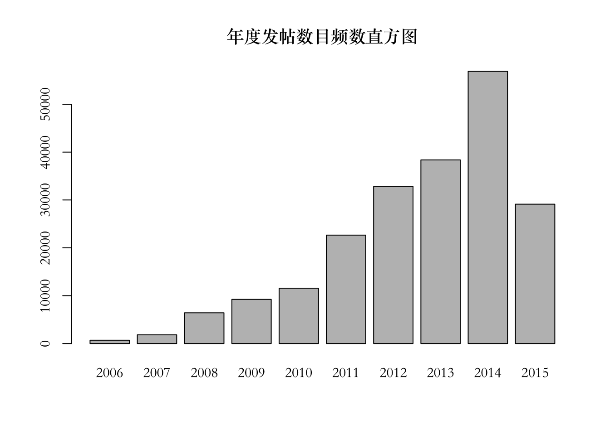
图中我们可以看到，从2006年论坛创建以来，帖子的数目几乎呈指数上升，2015年貌似不符合规律，其实是因为当前数据中只饱含到2015年5月的论坛数据，也就是说如果我们由所有2015年的数据，最后的直方条应该会超过2014年。这么简单的统计能够告诉我们什么呢？这样的统计量对于公司的市场预算是很重要的。假如某农业公司要决定是否投入人力和财力去挖掘这个农业论坛数据，首先需要明确的就是这些数据是不是有代表性，该论坛是不是活跃。上图就表明该论坛是处在高速发展阶段的，而且考虑到论坛的用户是农民，这样的活跃度是非常高的。所以相关决策人员或许可以将该论坛当作一个消费者评论信息的来源。只考虑年是不够的，我们可能还想类似的检查下月度发帖分布，我们可以类似的截取时间字符串中的月份，绘制直方图：
topic$month<-substr(posted_at2,6,7)
barplot(table(topic$month),family ="Songti SC", main="月度发帖数目频数直方图")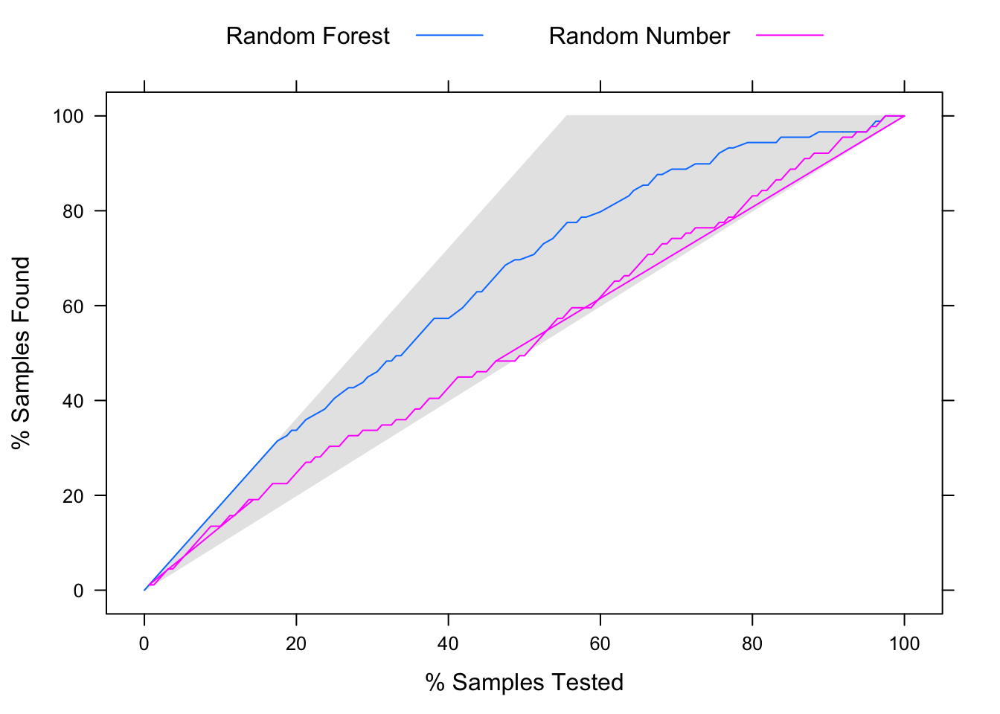
大家可以看到明显的季节效应。通常北半球12-4月是农闲时节，这个时候发帖数远高于开春（5月）之后。基于此，我们可以假设12-4月的帖子或许更多的是关于去年购买的种子收获情况以及一些下一年的耕种计划的信息，5月到11月间或许更多的是当下遇到的问题，比如播种时种子发芽情况，生长中雨水，作物抗旱性能等等。这些为农业公司提供了消费者对其产品的体验信息。这样简单的统计能够给我们之后的分析指引放下。再次强调，分析的整个流程是个渐进且协同的过程，前一步中获得的信息可能有助于我们明确之后要如何进行分析，下一步分析的结果可能又让我们返回之前的步骤，比如收集构建新变量等等。
再看看每天发帖的规律：
topic$time<-substr(posted_at2,12,13)
barplot(table(topic$time),family ="Songti SC",main="每日不同时间段发帖频数直方图")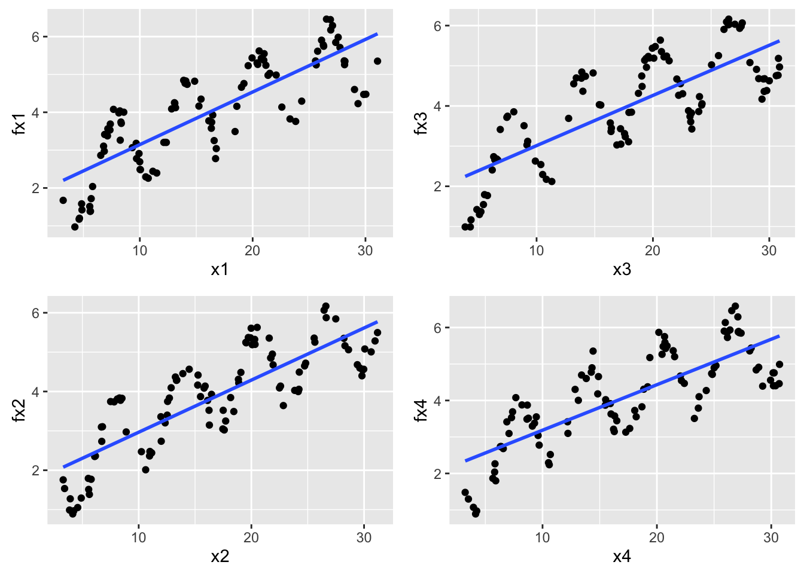
可以看到，每天有两个发帖高峰，中午一阵，晚上一阵（这里不考虑北美不同纬度的时差影响）。这能给我们什么信息呢？很有可能农民习惯于在这两个时间段上网查询信息等。如果农业公司想要发营销广告，这或许是最佳的时间。
上面是一个简单的关于构建特征的例子，在具体应用中特征构建的方法可以非常灵活，没有一个黄金标准。随着分析经验的增长，以及对相关领域的了解加深，构建有意义特征的能力也会随之提高。特征构建是特征工程中艺术成分最高的部分，接下来我们要介绍的特征提取和特征选择就有更强的技术性。
9.2 特征提取
特征提取是一项用不同变量的组合代替原变量的技术。它的目的是自动地构建新的特征，将原始特征转换为一组具有明显物理意义或者统计意义的特征。比如通过变换特征取值来减少原始数据中某个特征的取值个数等。我们考虑3个常用的可以对数据降维的特征提取方法。主成分分析（PCA）试图找到原变量的不相关线性组合，这些线性组合能够最大限度的解释原数据中变量方差。探索性因子分析（EFA）同样试图在尽量小的维度上解释原数据中尽可能多的方差。高维标度化（MDS）将观测见的相似度映射到低维度上，如2维平面。MDS能够作用于非数值型变量，如分类变量或者有序数据预测变量。接下来我们通过模拟的航空公司数据集来展示不同的特征提取方法。在市场营销中这类消费者调查问卷中，虽然初始问题很多，但通常存在多个调查项共同反应少数几个潜在因子。比如航空公司满意度调查数据中下面四个问题：购票容易度（Easy_Reservation）、座椅选择（Preferred_Seats）、航班选择（Flight_Options）和票价（Ticket_Prices）都和购票体验有关。
9.2.1 初步探索数据
我们先读入该数据：
# 可以从网站下载该数据
airline<-read.csv("/Users/happyrabbit/Documents/GitHub/DataScientistR/Data/AirlineRating.csv")可以用glimpse()函数检查该数据：
glimpse(airline)## Observations: 3,000
## Variables: 17
## $ Easy_Reservation <int> 6, 5, 6, 5, 4, 5, 6, 4, 6, 4, 5, 5, 6, 5, 5, ...
## $ Preferred_Seats <int> 5, 7, 6, 6, 5, 6, 6, 6, 5, 4, 7, 5, 7, 6, 6, ...
## $ Flight_Options <int> 4, 7, 5, 5, 3, 4, 6, 3, 4, 5, 6, 6, 6, 5, 6, ...
## $ Ticket_Prices <int> 5, 6, 6, 5, 6, 5, 5, 5, 5, 6, 7, 7, 6, 7, 7, ...
## $ Seat_Comfort <int> 5, 6, 7, 7, 6, 6, 6, 4, 6, 9, 7, 7, 6, 6, 6, ...
## $ Seat_Roominess <int> 7, 8, 6, 8, 7, 8, 6, 5, 7, 8, 8, 9, 7, 8, 6, ...
## $ Overhead_Storage <int> 5, 5, 7, 6, 5, 4, 4, 4, 5, 7, 6, 6, 7, 5, 4, ...
## $ Clean_Aircraft <int> 7, 6, 7, 7, 7, 7, 6, 4, 6, 7, 7, 7, 7, 7, 6, ...
## $ Courtesy <int> 5, 6, 6, 4, 2, 5, 5, 4, 5, 6, 4, 6, 4, 5, 5, ...
## $ Friendliness <int> 4, 6, 6, 6, 3, 4, 5, 5, 4, 5, 6, 7, 5, 4, 4, ...
## $ Helpfulness <int> 6, 5, 6, 4, 4, 5, 5, 4, 3, 5, 5, 6, 5, 4, 5, ...
## $ Service <int> 6, 5, 6, 5, 3, 5, 5, 5, 3, 5, 6, 6, 5, 5, 4, ...
## $ Satisfaction <int> 6, 7, 7, 5, 4, 6, 5, 5, 4, 7, 6, 7, 6, 4, 4, ...
## $ Fly_Again <int> 6, 6, 6, 7, 4, 5, 3, 4, 7, 6, 8, 6, 5, 4, 6, ...
## $ Recommend <int> 3, 6, 5, 5, 4, 5, 6, 5, 8, 6, 8, 7, 6, 5, 6, ...
## $ ID <int> 1, 2, 3, 4, 5, 6, 7, 8, 9, 10, 11, 12, 13, 14...
## $ Airline <fctr> AirlineCo.1, AirlineCo.1, AirlineCo.1, Airli...数据的前15列都是问卷调查的各种问题，问题格式如下：对该航空公司的<问卷项>你的满意度是？从1到9，分值越大满意度越高。可以看到前15列评分在1-9之间，是整数型了。ID代表受访者编号，不同编号代表不同受访者。每个受访者需要评估3家航空公司，列Airline指出相应的航空公司。一共有1000名受访者，因此观测的总行数为1000x3=3000。关于数据各列变量的解释，大家可以参考“数据集模拟和背景介绍”中相关小节。
我们用corrplot()函数检查问卷调查问题的相关性：
library(corrplot)
# 选取其中的问卷调查项
dplyr::select(airline,Easy_Reservation:Recommend)%>%
# 得到相关矩阵
cor()%>%
# 用corrplot()绘制相关图
# 选项order="hclust"按照变量的相似度，基于系统聚类的结果对行列进行重新排列
corrplot(,order="hclust")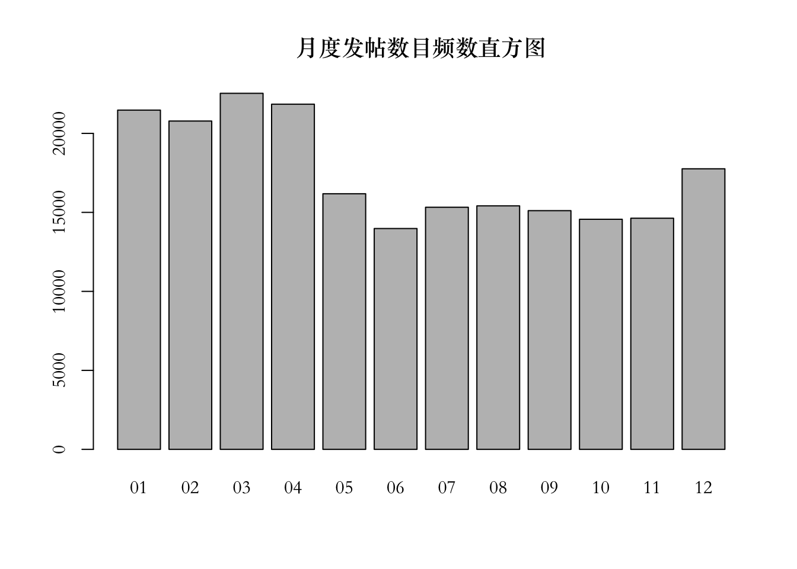
由相关矩阵图可以看到，这些问卷项大致分成3类：
- 空航服务相关
- 礼貌（Courtesy）
- 友善（Friendliness）
- 能够提供需要的帮助（Helpfulness）
- 食物饮料服务（Service）
- 购票体验相关
- 购票容易度（Easy_Reservation）
- 座椅选择（Preferred_Seats）
- 航班选择（Flight_Options）
- 票价（Ticket_Prices）
- 机舱设施和总体评估指数
- 座椅舒适度（Seat_Comfort）
- 位置前后空间（Seat_Roominess）
- 随机行李存放（Overhead_Storage）
- 机舱清洁（Clean_Aircraft）
- 总体满意度（Satisfaction）
- 再次选择次航空公司（Fly_Again）
- 向朋友推荐此航空公司（Recommend）
而且机舱设施和总体满意度相关性较高。空航服务和购票体验貌似负相关，也就是说航空公司目前没有做到让乘客对这两类体验都感到满意，这也可能是潜在需要提高的地方。这里简单的检查数据能够给我们一些基本的信息，让我们能够做出一些假设，然后在之后的分析中尝试证实这些假设。
对于这样的数据初步探索，一个非常自然的问题是：每个航空公司对应的各项评分均值是多少？我们可以用之前介绍的dplyr包中的各种函数，以及使用之前讲到的管道操作%>%让代码更易读：
# 选取其中的问卷调查项和航空公司因子信息
# 即删除ID项
airline.mean<-dplyr::select(airline,-ID)%>%
# 按Airline对数据进行分组总结
group_by(Airline)%>%
# 对每个数值
summarise_each(funs(mean))%>%
# 显示数据
glimpse()## Observations: 3
## Variables: 16
## $ Airline <fctr> AirlineCo.1, AirlineCo.2, AirlineCo.3
## $ Easy_Reservation <dbl> 5.031, 2.939, 2.038
## $ Preferred_Seats <dbl> 6.025, 2.995, 2.019
## $ Flight_Options <dbl> 4.996, 2.033, 2.067
## $ Ticket_Prices <dbl> 5.997, 3.016, 2.058
## $ Seat_Comfort <dbl> 6.988, 5.009, 7.918
## $ Seat_Roominess <dbl> 7.895, 3.970, 7.908
## $ Overhead_Storage <dbl> 5.967, 4.974, 7.924
## $ Clean_Aircraft <dbl> 6.947, 6.050, 7.882
## $ Courtesy <dbl> 5.016, 7.937, 7.942
## $ Friendliness <dbl> 4.997, 7.946, 7.914
## $ Helpfulness <dbl> 5.017, 7.962, 7.954
## $ Service <dbl> 5.019, 7.956, 7.906
## $ Satisfaction <dbl> 5.944, 3.011, 7.903
## $ Fly_Again <dbl> 5.983, 3.008, 7.920
## $ Recommend <dbl> 6.008, 2.997, 7.929上面的数值结果可以看到乘客对各个航空公司的满意度情况有明显的区别。总的来说购票体验相关的项满意度偏低（购票容易度（Easy_Reservation）、座椅选择（Preferred_Seats）、航班选择（Flight_Options）和票价（Ticket_Prices）），相较而言第1个航空公司在购票体验方面优于竞争对手，但在其它方面并没有优势。第2个航空公司在空航服务方面做的比较好，在其它方面也没有优势。第3个航空公司除了购票体验较差以外，在其它方面都至少和竞争对手相当，或者优于竞争对手。这里的数据分类和之前相关矩阵图展示出的信息有一致性，但也提醒我们各个航空公司对应的问卷回复项之间的关系可能不一样。对于上面各航空公司评分均值结果使用热图进行可视化是很好的方式。我们用gplots包中的heatmap.2()函数绘制热图，用RColorBrewer包对图形着色：
# gplots是可视化包
library(gplots)
# RColorBrewer包用于设计图形的调色盘
# 相关信息见：http://colorbrewer2.org
library(RColorBrewer)
# 将航空公司设置成行名称然后将对应的字符列删除
row.names(airline.mean)<-airline.mean$Airline
airline.mean<-dplyr::select(airline.mean,-Airline)
# 绘制热图
heatmap.2(as.matrix(airline.mean),
col=brewer.pal(9,"YlGn"),trace="none",key=FALSE,dend="none",cexCol=0.6,cexRow =1)
title(family ="Songti SC",
main="航空公司问卷调查均值热图")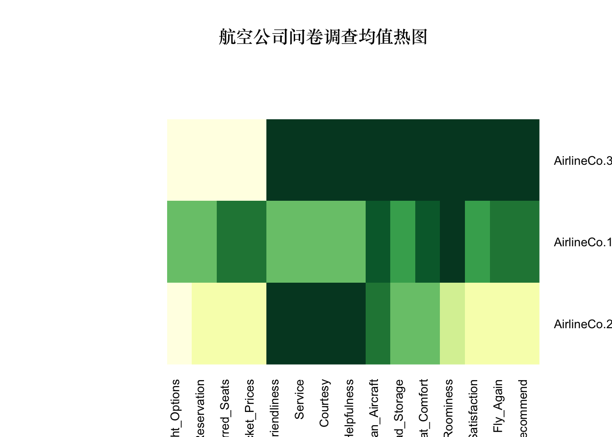
在上面代码中，我们将数据框airline.mean转化成矩阵传递给heatmap.2()，因为函数要求。我们通过RColorBrewer包中的YlGn调色盘，用黄色和绿色对热图着色，并且取消了一些将热图变得复杂的选项（trace、key和dend）。在结果图中，绿色表示高观测值，黄色表示低观测值，处于中间的值对应的颜色较浅。乘客对不同航空公司的满意度分值分布很显然有区别。航空公司3和2有明显让人满意和不满意的地方，而公司1总体来说比较平均，除了乘客对其位置前后空间（Seat_Roominess）特别满意。如果考虑和竞争对手的差距，1和2需要改进的地方显然比3要多。
通过观测目前得到的一些探索性结果，我们可以猜测各个问题可能的聚类情况，以及它们之间的关系。但我们最好使用更严格正规的统计模型验证这些猜测。接下来我们就开始介绍模型。
9.2.2 主成分分析
主成分分析（PCA）是寻找变量的线性组合，得到新的组合变量叫做“成分”，其指导思想是尽量捕捉原数据中方差。在统计学中，方差通常也被认为是信息。第一个成分捕捉的方差最大。第二个成分尽可能多的捕捉前一个成分没有解释的方差。依次类推，直到成分的数目和原变量数目一样多。我们通过使用前几个成分取代原变量来达到降维的目的，同时要保证这些成分能够解释大部分原始数据集中的方差。这里要提醒一点，如果数据观测不在一个标度上时需要对数据进行标准化，因为PCA是基于变量协方差矩阵。这里因为各个变量的观测分布没有很大差异，是不是标准化没有太大的影响。
airline.pc<-dplyr::select(airline,Easy_Reservation:Recommend)%>%
prcomp()
summary(airline.pc)## Importance of components:
## PC1 PC2 PC3 PC4 PC5 PC6
## Standard deviation 4.693 4.2836 1.68335 1.03625 0.88896 0.82333
## Proportion of Variance 0.435 0.3624 0.05596 0.02121 0.01561 0.01339
## Cumulative Proportion 0.435 0.7974 0.85338 0.87458 0.89019 0.90358
## PC7 PC8 PC9 PC10 PC11 PC12
## Standard deviation 0.80349 0.78694 0.77536 0.77020 0.74612 0.71831
## Proportion of Variance 0.01275 0.01223 0.01187 0.01172 0.01099 0.01019
## Cumulative Proportion 0.91633 0.92856 0.94043 0.95215 0.96314 0.97333
## PC13 PC14 PC15
## Standard deviation 0.69417 0.66650 0.65131
## Proportion of Variance 0.00952 0.00877 0.00838
## Cumulative Proportion 0.98285 0.99162 1.00000由上面输出结果的第一行是主成分的标准差，第二行对应成分单独解释方差的比例，第三行是累计解释方差。可见，前两个主成分解释的大部分原变量方差（80%）。plot()函数作用在PCA结果上默认绘制陡坡图，该图展示每个成分额外解释的方差。我们可用累计解释方差比例或者陡坡图来判断需要的主成分。我们通过下面代码绘制图形：
plot(airline.pc,type="l",family ="Songti SC",main="PCA陡坡图")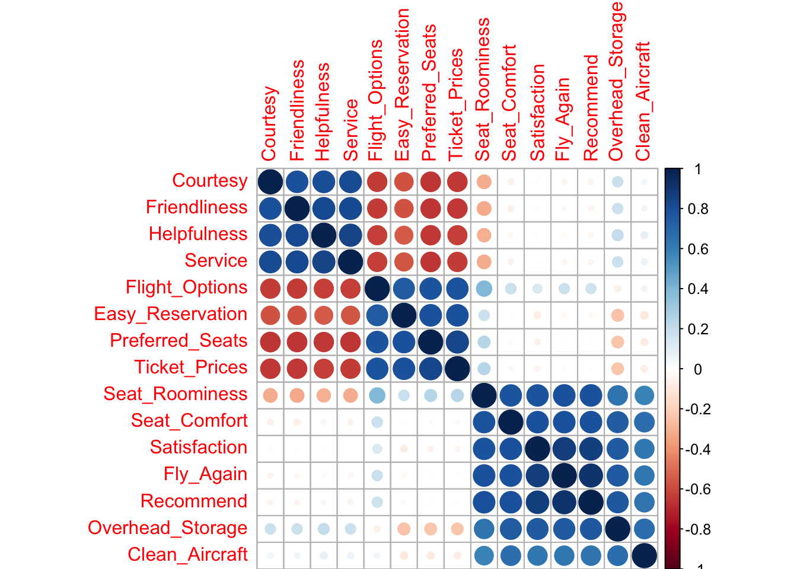
图的横坐标是主成分编号，纵坐标是该主成分解释的方差，即变量协方差矩阵单位正交特征向量对应的特征值。图中由陡到缓的转折点能告诉我们从哪个主成分开始，继续添加更多的成分对解释更多方差没有太大帮助，反而增加模型复杂度。关于拐点的判断是主观的。从第3个主成分开始，新的主成分解释的方差相对较小，因此我们可以取头2个主成分。将各个原始变量映射到前两个主成分张成的平面上能够揭示这些变量之间的关系。这样的图称为“双标图”，可以用biplot()函数绘制：
biplot(airline.pc,family ="Songti SC",main="PCA双标图",cex=c(0.5,1),xlim=c(-0.06,0.04))
双标图的横坐标是第一个主成分（PC1），纵坐标是第二个主成分（PC2）。图中的点代表各个观测评分投影在这两个主成分张成的平面上。图中的箭头代表每个变量对应这两个主成分的载荷系数决定的方向。由于这两个主成分能够解释原始观测大部分的方差，在双标图中距离较近的点有相似的观测。
满意度评分PCA结果的双标图中红色的箭头中看到不同调查问题的聚类情况，并且可以大致感觉样本的聚类情况，大致成为3类，一个合理的猜测是针对3个不同的航空公司。从之前的热图可以看到，3个公司有各自的优势和劣势，评分分布显然是不同的。但这样的图有个问题：基于所有评分样本导致图形非常稠密，难以识别。如果是基于各个公司聚合后的数据，得到的图或许会更清晰。
airline.mean.pc<-dplyr::select(airline.mean,Easy_Reservation:Recommend)%>%
prcomp()
biplot(airline.mean.pc,family ="Songti SC",main="聚合后PCA结果双标图",
cex=0.7, expand=2,xlim=c(-0.8, 1),ylim=c(-0.7,0.8))按航空公司聚合后的结果双标图提供了可解释的乘客感知图，该图展示了各个航空公司在前两个主成分上的定位。我们先和聚合前后的感知图进行比较。注意，感知图的空间旋转是任意的，重要的是箭头的相对位置。比如，在两个感知图中，Courtesy、Friendliness、Service和Helpfulness都几乎重叠。 Seat_Comfort、Seat_Roominess、Overhead_Storage、Clean_Aircraft、Satisfaction、Fly_Again和Recommend大致指向相同的方向。剩下的Easy_Reservation、Preferred_Seats、Flight_Options和Ticket_Prices紧密相连。因此聚合后变量在主成分纬度上的分布位置和用原始观测得到的一致，但基于公司平均分值的结果更清晰的展示了公司相对定位情况。航空公司3在机舱设施、总体满意度和空航服务上得分都较高。航空公司2在空航服务方面得分较高。航空公司1在购票体验上表现较好。且在购票体验上满意度高的乘客更不满空航服务。如果你是航空公司3的商业数据分析师，看到这样的结果你可以得到什么结果？
- 公司在很多方面具有竞争优势，客户满意度总体高于竞争对手
- 公司在购票体验上有明显劣势，这是需要努力改进的地方
- 我们为什么在购票体验上满意度高的乘客更不满空航服务？是因为乘客本身的特质，或是由于某种原因重视空航服务的公司容易忽视购票体验？
- 需要进一步研究购票体验差的原因，以及评估其可能带来的影响：如果购票体验差并不会影响当前总体满意度以及票的销售情况，那我们需要投入多少改进该问题？
如果航空公司1只是一个很小的公司，并不是主要竞争对手。你的主要竞争对手是航空公司2，那你可以进一步检查你们公司和航空公司2的得分差别：
airline.mean[3,]-airline.mean[1,]## Easy_Reservation Preferred_Seats Flight_Options Ticket_Prices
## 1 -2.993 -4.006 -2.929 -3.939
## Seat_Comfort Seat_Roominess Overhead_Storage Clean_Aircraft Courtesy
## 1 0.93 0.013 1.957 0.935 2.926
## Friendliness Helpfulness Service Satisfaction Fly_Again Recommend
## 1 2.917 2.937 2.887 1.959 1.937 1.921从上面结果可以看出，和主要竞争对手相比，我们主要的劣势在于购票容易度（Easy_Reservation）、座椅选择（Preferred_Seats）、航班选择（Flight_Options）和票价（Ticket_Prices）上。在座椅舒适度（Seat_Comfort）、座椅空间（Seat_Roominess）、机舱清洁（Clean_Aircraft）和随机行李存放（Overhead_Storage）上两者相当。在剩余方面我们有优势。
通常情况下，对这样的问卷调查数据，你需要在不同维度上比较各个公司。可以通过陡坡图或者直接观察累计方差来决定该用多少的主成分。两个主成分张成的平面上绘制感知图能够解释观测在主成分维度上的分布。对这样多维度的市场调查数据，用PCA进行可视化是理解各个公司或者品牌在消费者认知中的分布的有效手段。关于该方法有几个需要注意的地方：
这里我们选择用均值对各个公司的评分进行聚合。但这并不是唯一的方式，取决于你的数据和问题，也可以使用中位数。在解释聚合后结果双标图之前，应该先确保聚合前后双标图上主成分相对位置分布一致。
这里所说的位置分布都是只相对位置，而不是具体的位置。主成分是基于所有变量的线性组合，因此从图上无法看出某个公司在特定问卷调查项上的具体强度。比如由图可以看出，公司3和公司2在机舱设施和总体满意度这个大方向上分布不同。检查具体的平均评分你会发现，总体上3确实在这两个方面好于2，但这并不代表3在其中每一个问卷调查项上都由明显优势，事实上，这三个公司在
Clean_Aircraft这个选项上差别都不是很大。这里我们研究的是在一个更高层面上的消费者满意度分布。这里得到的各项相对分布位置和你考虑的公司，还有问卷调查项有关。如果对另外3个不同的公司进行同样的问卷调查，可能结果会不同，或者添加新的调查项也可能改变原来调查项的相对位置。一个评估模型敏感性的方法是抽取一个样本子集进行类似分析，或者删除一些问卷调查项，看看结果是不是有很大变化。如果这些随机干扰下得到的双标图中各项的相对位置相似的话，你对在该项目中使用这个模型就更加自信。
最后一点和建模没有直接关系，但是在应用中很重要。问题出现在问卷调查上不代表问题就重要。取决于不同公司对定义“重要”的定义。通常情况下，在有限的市场研究经费下我们希望问和用户购买行为最相关的问题。比如在购票体验方面，对购买决定影响最大的可能是票价，而了解乘客是否对座椅选择满意本身当然没有坏处，但是考虑到进行调查研究的成本，我们不得不问：是不是需要问这个问题？有没有更好的问题取代当前问题？这需要你首先定义一个衡量“重要性”的标准（如，总体满意度，购买行为），然后据此尽量寻找对该标准影响最大的问题。
从上面的例子中我们可以看到调查项大致分成几个类，每类问题对应一个可能的潜在变量。比如购票容易度（Easy_Reservation）、座椅选择（Preferred_Seats）、航班选择（Flight_Options）和票价（Ticket_Prices）就和购票体验有关。接下来我们可能会想知道如何用更科学的方式分析出调查项背后的潜变量，以及衡量受访者对某公司或品牌针对某个潜变量的总体得分（比如对总体购票体验），如果需要提高消费者对某方面的认知，商家需要关注哪些具体问题（比如，提高价格竞争力可能对购票体验的提高帮助最大）。下面我们要讲的探索性因子分析就可以帮助我们实现这一点。
9.2.3 探索性因子分析
探索性因子分析（EFA）可以用来获取抽样调查中问题之间的构造。这里的因子就是无法观测到的潜变量，或者隐变量。因子分析的形成和早期发展一般认为是从Charles Spearman在1904年发表的文章开始(Spearman 1904)。关于因子分析的经典案例是心理学和教育学中的测试。例如“智力”，人格依恋类型（安全型，焦虑－矛盾型和回避型），人格特点（外倾性，宜人性，尽责性，神经质和开放性），这些都是抽象的概念或者说构造，它们都是无法直接观测到的。取而代之的，我们可以用不同的行为反映这些变量。这些观测到的行为变量称为显变量，比如测试分数，问卷调查回复以及其它观测到的行为。EFA的目标是找到能最大限度解释显变量方差的隐因子（即潜变量）。
比如在此例中，我们不能直接观测到客户总体满意度的构成，但我们可以通过问卷获知客户对各项具体活动的满意度，然后通过数据分析，尽可能的揭示导致客户总体印象背后的原因，这样可以将资金投入到能最有效改善客户满意度的项目。在本小节中，我们通过EFA进一步探索评分数据下的潜在机制，然后根据得到的隐因子估计比较不同的公司。
EFA的结果是一个因子矩阵，其目标是使一小部分变量对应较高的因子载荷，其余的因子载荷都很低。这样的因子能由少数几个变量解释。其通过旋转正交矩阵改变变量对应的因子载荷，在旋转过程中不改变解释方差。好比小时候切生日蛋糕，总想尽量保持蛋糕上图样的完整，坚决不要把奶油塑成的花对半切开，当然还有生肖图案，每次不得不切开的时候都无比纠结。这个纠结权衡的过程就喝EFA类似，这样旋转切分后得到的结果比随机切分要让强迫症患者舒服的多。其中一些每块蛋糕上面一朵完整的花，有一大块表面是完整的的生肖图案，有的上面是水果等等。这一块块蛋糕就好比隐因子，这些因子的定义不是唯一的，没有一种切分方式严格优于另外一种，但是总有一些比另外一些让你更舒服。对于EFA的结果，总有一些因子结果比另外一些更有用，能更好的解释实际现状。
和PCA相比，能产生可解释和实践的结果是EFA的一大优势。如果我们只对EFA得出的某因子感兴趣，可以保留该因子对应载荷高的问题，舍去其它问题，优化问卷调查。之后在例子中我们会展示EFA还能用来探索调查项相互联系的方式是不是符合我们的期待。可能真实的维度比我们想的少，也可能因子分析结果反映了一些我们不知道的维度。由于EFA是探索性的，没有非黑即白的标准答案，这里一定要特别关注结果的可解释性。如果结果难以解释，得到的因子对实际工作也没有作用。
下面我们还是以航空公司满意度调查的数据为例展示如何应用EFA。其中第一步就是决定要估计的因子数目。通常的方法是通过之前提到的陡坡图，或者根据对应特征值来决定因子数目（大于1的特征值数目）。R包nFactors中的函数nScree()能够应用几种方法通过陡坡检验估计因子数目。
library(nFactors)
subset(airline,select=Easy_Reservation:Recommend)%>%
# 转化成数据框格式传递给nScree()函数
data.frame()%>%
nScree()## noc naf nparallel nkaiser
## 1 2 2 2 2结果显示，当前的4个方法建议的因子数目都是2。我们也可以通过特征值来决定因子数目。eigen()函数可以用来得到特征值：
# 得到变量相关矩阵的特征值
eigenvalue<-subset(airline,select=Easy_Reservation:Recommend)%>%
cor()%>%
eigen()
eigenvalue$values## [1] 6.13519681 5.47501966 0.94251965 0.46623604 0.26506447 0.22711198
## [7] 0.21221230 0.21044797 0.19462556 0.17989084 0.16075997 0.15678382
## [13] 0.15513097 0.13273209 0.08626788可以看到开始2个特征值都大于1，因此，这里给出的因子数目建议还是2。再次强调，最后模型是不是有效取决于其可解释性。在实际应用中，最好检测多个因子数目。比如，2个或者3个。这里我们使用2个因子。接下来通过factanal()函数拟合EFA模型：
airline%>%
subset(select=Easy_Reservation:Recommend)%>%
factanal(factors=2)这里只截取输出的载荷部分：
Loadings:
Factor1 Factor2
Easy_Reservation -0.754
Preferred_Seats -0.831
Flight_Options -0.801 0.155
Ticket_Prices -0.819
Seat_Comfort 0.863
Seat_Roominess -0.346 0.846
Overhead_Storage 0.233 0.833
Clean_Aircraft 0.707
Courtesy 0.864
Friendliness 0.869
Helpfulness 0.867
Service 0.872
Satisfaction 0.921
Fly_Again 0.942
Recommend 0.941 其中factors=2设置因子数目为2. 我们看看结果输出的载荷Loadings，这是最需要解释的部分。结果中没有显示接近0的因子载荷。在此方案中，因子1对应载荷高的变量为：
- 购票体验相关变量：
Easy_Reservation，Preferred_Seats，Flight_Options，Ticket_Prices - 机舱服务相关变量：
Courtesy，Friendliness，Helpfulness，Service
因子2对应载荷高的变量为：
- 机舱设施相关变量：
Seat_Comfort，Seat_Roominess，Overhead_Storage，Clean_Aircraft - 总体满意度相关变量：
Satisfaction，Fly_Again，Recommend
也就是说这些结果大致反映出两类因子，其中一类和购票体验和机舱服务相关，另外一类和机舱设施和总体满意度相关。回忆之前得到的相关矩阵图，购票体验和机舱服务在图上强烈负相关，这里因子分析将它们看作受同一个因子影响，但载荷符号相反。这里很自然的提出一个实际问题，为什么对购票体验满意度高时对机舱服务满意度就低？这是需要和营销人员沟通的地方。同时，从统计的角度，我们可能会想，如果我们设置3个因子，是否会将购票体验和机舱服务分开呢？下面我们试着将因子个数设置成3个：
airline%>%
subset(select=Easy_Reservation:Recommend)%>%
factanal(factors=3)Loadings:
Factor1 Factor2 Factor3
Easy_Reservation -0.318 0.814
Preferred_Seats -0.422 0.815
Flight_Options 0.163 -0.419 0.759
Ticket_Prices -0.406 0.813
Seat_Comfort 0.864
Seat_Roominess 0.847 -0.286 0.189
Overhead_Storage 0.832 0.160 -0.172
Clean_Aircraft 0.706
Courtesy 0.786 -0.403
Friendliness 0.813 -0.385
Helpfulness 0.854 -0.342
Service 0.842 -0.362
Satisfaction 0.921
Fly_Again 0.942
Recommend 0.941 结果如我们所料，将之前机舱服务和购票体验对应的因子进一步分开成为两个因子。这个结果和之前基于主成分分析得到的双标图中问题对应箭头方向的聚类情况一致。
了解一些关于EFA背后理论的读者应该知道，因子载荷估计并不是唯一的，我们可以通过旋转产生新的载荷，所谓旋转，就是只用一个矩阵右乘因子载荷矩阵。当你使用的是正交矩阵时，就是正交旋转，否者是斜交旋转。比如有一种常用的正交旋转叫做方差最大正交旋转（varimax rotation），其目的是使得旋转后的各因子载荷的平方按列向0和1两级分化，以便每个因子具有实际的解释，该方法寻找的是不相关的因子。斜交旋转的方法允许因子之间相关。基于之前的讨论可知，购票体验和机舱服务是负相关的，更合理的方法是允许各因子间相关。下面我们用一种常见的斜交变换（oblimin）重复3因子模型：
library(GPArotation)
airline%>%
subset(select=Easy_Reservation:Recommend)%>%
factanal(factors=3,rotation="oblimin")Loadings:
Factor1 Factor2 Factor3
Easy_Reservation 0.941
Preferred_Seats 0.880
Flight_Options 0.167 0.803
Ticket_Prices 0.887
Seat_Comfort 0.865
Seat_Roominess 0.844 -0.242
Overhead_Storage 0.833 0.137 -0.142
Clean_Aircraft 0.708
Courtesy 0.818
Friendliness 0.868
Helpfulness 0.953
Service 0.922
Satisfaction 0.921
Fly_Again 0.943
Recommend 0.942 从载荷中可以看到，允许因子之间相关更好的区分了购票体验和机舱服务，这样能够更加清晰的解释这两个感知项。这里就牵扯到一个问题，我们如何决定因子是该独立还是相关呢？你可能觉得这是数据决定的。但其实各因子间的相关性不是一个数据问题，而是你对潜因子的构想，或者假设。从认知概念的角度，你觉得在当前语境下因子独立有意义还是相关有意义？
因子分析在特征提取方面的优势体现在下面3个方面：
- 我们可以用维度更低的因子分值取代大量原始调查问题
- 将反映相同认知维度的问卷分值联合起来比使用其中任何一项含有更多的信息。也在某种程度上缓解单个变量评分中的不确定性。从人脑认知的角度看，我们的购买决策常取决于一个总体的印象，而我们自己也无法解释其中具体的组成成分。所以在比较不同的公司或品牌时，应该关注总体感知。
- 通常人们会有一些感兴趣的因子，通过因子载荷，我们可以删除贡献小的变量从而简化收集过程。
9.2.4 高维标度化
高维标度化（Multi-Dimensional Scaling）是一类用来寻找原数据低维表达的方法。其目标和主成分双标图以及因子分析类似，但达成目标的方法不同。MDS没有提取潜在成分或者潜因子，而是试图将原数据投影到一个更低的维度，同时保持各项之间的距离。对于航空公司评分数据，你在使用MDS之前需要先计算出各个观测之间的距离。这里是数值型的观测，可以用dist()函数计算欧几里德距离，如果是排序，分类观测，可以使用不同的方法计算距离。
var.dist<-airline%>%
subset(select=Easy_Reservation:Recommend)%>%
# 用dist()函数计算评分之间的距离
dist()接下来我们通过cmdscale()函数对得到的距离矩阵寻找MDS方案：
var.mds<-cmdscale(var.dist)%>%
data.frame()
# 重新为列命名
names(var.mds)<-c("Score1","Score2")我们可以看下得到的结果：
head(var.mds)## Score1 Score2
## 1 -0.04272332 -4.919362
## 2 2.81785655 -5.743754
## 3 1.91700905 -3.993620
## 4 2.46725348 -5.297467
## 5 -0.23900139 -7.659147
## 6 1.10832836 -5.605850函数cmdscale()返回的是一个2列的数据框，分别对应不同样本两个坐标的取值。也就是将原本15列的数据降到2维平面上，和之前在头两个主成分张成的平面投影很类似。我们可以按照这些坐标值，用plot()函数进行基础可视化：
plot(var.mds)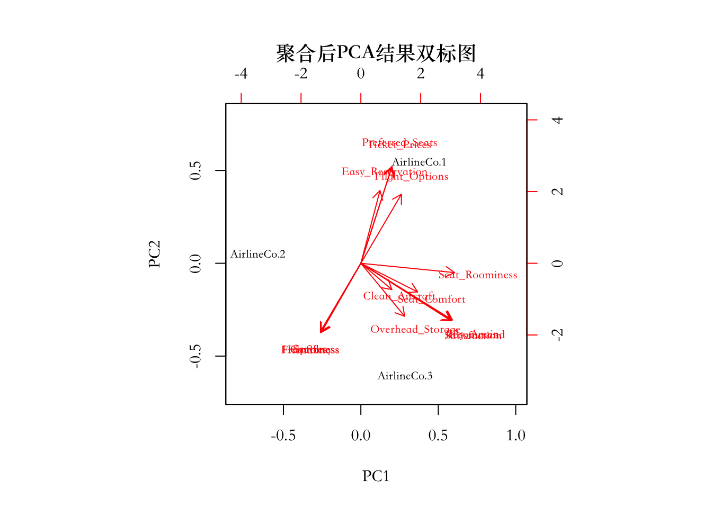
这些点聚类的情况和我们在之前没有聚合的双标图类似。下面我们同样将观测按照不同航空公司聚合后重复相同的分析，看看结果如何：
mean.dist<-airline.mean%>%
dist()
mean.mds<-cmdscale(mean.dist)%>%
data.frame()
# 重新为列命名
names(mean.mds)<-c("Score1","Score2")
plot(mean.mds,type="n",xlim=c(-8,6),ylim=c(-5,6))
text(mean.mds,row.names(mean.mds),cex=1)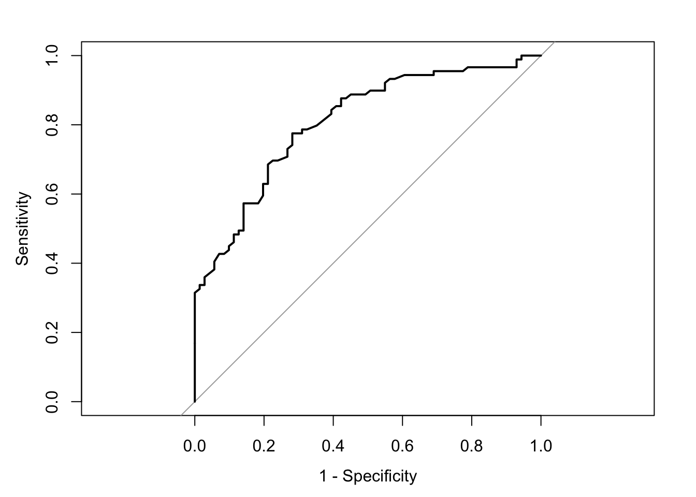
上面代码中，plot(..., type="n",...)是告诉R不要用任何符号绘制数据点，然后用text()函数将航空公司名作为数据点绘制在图上。这里的结果类似于之前聚合后的双标图。
对于分类或者排序变量，你可以使用不同的方法计算距离，比如cluster包中的daisy()可以用来计算排序变量之间的距离。我们们将聚合后的数据转换为排序来展示MDS在这种情况下的使用。
mean.rank<-lapply(airline.mean,function(x) factor(rank(x),ordered=T))%>%
data.frame()
glimpse(mean.rank)## Observations: 3
## Variables: 15
## $ Easy_Reservation <ord> 3, 2, 1
## $ Preferred_Seats <ord> 3, 2, 1
## $ Flight_Options <ord> 3, 1, 2
## $ Ticket_Prices <ord> 3, 2, 1
## $ Seat_Comfort <ord> 2, 1, 3
## $ Seat_Roominess <ord> 2, 1, 3
## $ Overhead_Storage <ord> 2, 1, 3
## $ Clean_Aircraft <ord> 2, 1, 3
## $ Courtesy <ord> 1, 2, 3
## $ Friendliness <ord> 1, 3, 2
## $ Helpfulness <ord> 1, 3, 2
## $ Service <ord> 1, 3, 2
## $ Satisfaction <ord> 2, 1, 3
## $ Fly_Again <ord> 2, 1, 3
## $ Recommend <ord> 2, 1, 3我们接下来用daisy()中的gower度量(Gower 1971)，它可以用于虚拟变量，非对称二项变量，以及排序变量。
library(cluster)
mean.rank.gower<-daisy(mean.rank,metric="gower")然后用MASS包中的isoMDS()来标度化数据，对结果绘制基本图形：
library(MASS)
mean.mds.gower<-isoMDS(mean.rank.gower)## initial value 0.000000
## final value 0.000000
## convergedplot(mean.mds.gower$points,type="n",xlim=c(-0.5,0.5),ylim=c(-0.2,0.4))
text(mean.mds.gower$points,row.names(mean.mds),cex=1)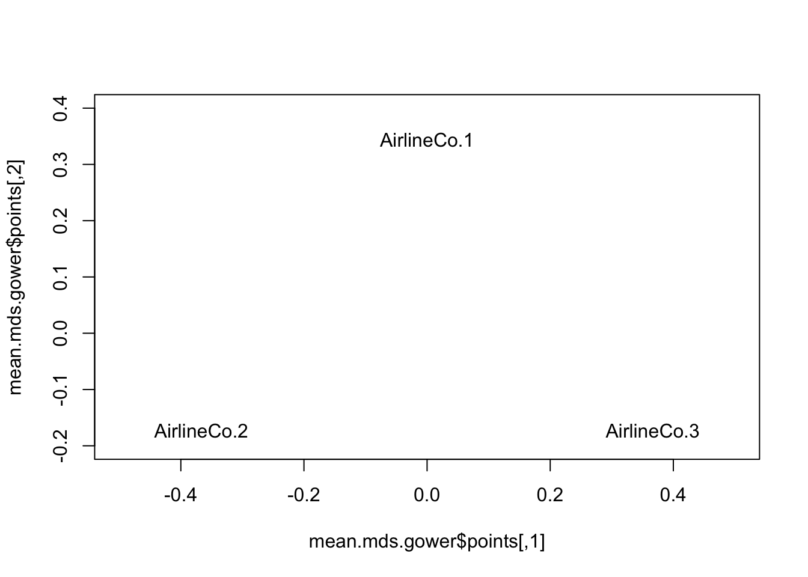
函数isoMDS()的坐标结果存在返回对象的points矩阵中，所以我们通过mean.mds.gower$points获取该矩阵。我们和之前基于欧几里德距离的结果比较可以发现，这两个结果中3个航空公司的分布并不相同。和之前相比，现在3个航空公司的分布更加对称，基本在一个等边三角形的3个顶点上，任意两个航空公司之间的距离都差不多。但之前欧几里德距离下的结果显示航空公司1和3更加接近。对于这两者结果差别我们并不感到意外，因为当你将具体分值转成排序的时候损失了一些信息。在有具体分值观测的情况下用欧几里德距离就可以了。这里只是为了展示isoMDS()的用法所以将其转化为排序变量。
总体来说在当前例子中，和PCA相比，MDS得到的信息更少。但是在处理文本数据时，比如用户反馈评论MDS就显示出优势了。比如你可以检查不同品牌名称在多少评论中的同时出现，出现的频数矩阵可以用来衡量不同品牌的分布(Oded Netzer 2012)。
9.2.5 知识扩展
之前只介绍如何应用主成分分析和因子分析。虽然我尽量用非技术的语言解释模型背后的思想，但要很好的解释模型结果，还是需要对理论背景有所了解。本小节主要介绍这两种方法背后的数学理论，建议有一定数学基础的读者能够花些时间理解这些知识。
9.2.5.1 主成分分析
假设我们有随机变量组成的向量\(\mathbf{X}=[X_{1},X_{2},...,X_{p}]^{T}\)，其对应的协方差矩阵为\(\Sigma\)。
主成分分析的目的就是通过对原变量进行线性组合找到彼此不相关的新变量 \((Z_{1} , Z_{2} , \ldots , Z_{p})\)，依次最大化每个变量的方差:
\[ \begin{array}{ccccc} Z_{1} & = & \mathbf{a_{1}^{T}X} & = & a_{11}X_{1}+a_{12}X_{2}+\cdots+a_{1p}X_{p}\\ Z_{2} & = & \mathbf{a_{2}^{T}X} & = & a_{21}X_{1}+a_{22}X_{2}+\cdots+a_{2p}X_{p}\\ \vdots & \vdots & \vdots & \vdots & \vdots\\ Z_{P} & = & \mathbf{a_{p}^{T}X} & = & a_{p1}X_{1}+a_{p2}X_{2}+\cdots+a_{pp}X_{p} \end{array} \]
其中：
\[Var(Z_{i})=\mathbf{a_{i}^{T}\Sigma a_{i}},\ \ \ \ \ \ \ \ \ i=1...p\] \[Cov(Z_{i},Z_{k})=\mathbf{a_{i}^{T}\Sigma a_{k}},\ \ \ \ \ \ \ \ \ i,k=1...p\]
从几何学上讲，主成分分析中生成各个主成分的过程可以看成是将\((X_{1},X_{2},\ldots,X_{p})\)定义的坐标系旋转成新坐标系。新坐标的坐标轴代表了观测方差最大的方向。主成分的推导依赖于 \(\mathbf{X}\)的相关矩阵\(\Sigma\)，这是典型的无监督学习，并且不要求变量服从多元正态分布。PCA过程按如下依次寻找主成分：
- 在控制条件\(\mathbf{a_{1}^{T}a_{1}}=1\)下，通过最大化方差\(Var(Z_{1})=\mathbf{a_{1}^{T}\Sigma a_{1}}\)得到第一个主成分\(Z_{1}\)
- 在控制条件\(\mathbf{a_{2}^{T}a_{2}}=1\)和\(Cov(Z_{1},Z_{2})=0\)下，通过最大化\(Var(Z_{1})=\mathbf{a_{1}^{T}\Sigma a_{1}}\)得到第二个主成分\(Z_{2}\)
- 依次类推，对第i个主成分，在控制条件\(\mathbf{a_{i}^{T}a_{i}}=1\)和\(Cov(Z_{i},Z_{k})=0\)（任意\(k<i\)）下，通过最大化\(Var(Z_{i})=\mathbf{a_{i}^{T}\Sigma a_{i}}\)得到第二个主成分\(Z_{i}\)
对于上面第1条，可以证明
\[Var(Z_{1})=\mathbf{a_{1}^{T}\Sigma a_{1}}=\underset{\mathbf{e^{T}e=1}}{max} \mathbf{e^{T}\Sigma e}=\lambda_{1}\]
其中，\(\lambda_{1}\geqslant\lambda_{2}\geqslant...\geqslant\lambda_{p}\)是\(\Sigma\)的特征值， \(\mathbf{a_{1},a_{2},...,a_{p}}\)是相应的单位正交特征向量。证明需要用到谱分解定理，但并不复杂。
由于主成分分析基于变量协方差矩阵\(\Sigma\)，我们需要特别注意各个变量的标度，如果差别很大（比如年龄和收入），那需要将观测标准化后再进行分析。关于如何用R进行数据标准化，我们在之前数据预处理的部分已经详细介绍过了。当前例子中所有问题的回复都在1-9分的量表上，所以是不是标准化差别不太大。注意，这里我们说所的\(\mathbf{X}=[X_{1},X_{2},...,X_{p}]^{T}\)是随机变量组成的向量，这是一个理论设定。在具体应用中，我们有的是对每个变量的观测，然后用观测的样本协方差矩阵来估计变量协方差矩阵。之所以这里用理论上的随机变量的表达方式是为了简便，不然用真实的样本观测矩阵解释会有很多矩阵转秩，即使背后的理论简单，这样的数学表达也能让人看晕。要想把这样的数理知识解释的有趣实在超出我的能力范围，这里我只是尽量使得讲解清晰，减少不必要的混淆。但我知道这部分终归是让人抓狂的，小伙伴们忍忍吧！
9.2.5.2 因子分析
因子分析是研究相关阵或者协方差矩阵的内部关系，它将多个变量综合为少数几个因子，以再现原始变量和因子之间的相关关系。因子分析和主成分分析有联系，是其推广和发展。1904年Charles Spearman指出，如果第i个变量（第i门功课）上的分数由两部分组成的：
\[X_{i}=l_{i}F+\epsilon_{i}\]
其中F是对所有变量都起作用的公因子，那么就可以说明各门功课相关的“效应”。每门课程的考试成绩可以看作由一个公因子（智力因子）和一个特殊因子之和组成。这是最早的最简单的因子模型。可以将这个因子模型进一步推广到多个因子的情况，即全体科目所共有的因子有m个，如数学推导因子、记忆因子、计算因子等，分别记为\(F_{1},...,F_{m}\)：
\[ \begin{array}{ccc} X_{1}-\mu_{1} & = & l_{11}F_{1}+l_{12}F_{2}+\cdots+l_{1m}F_{m}+\epsilon_{1}\\ X_{2}-\mu_{2} & = & l_{21}F_{1}+l_{22}F_{2}+\cdots+l_{2m}F_{m}+\epsilon_{2}\\ \vdots & \vdots & \vdots\\ X_{p}-\mu_{p} & = & l_{p1}F_{1}+l_{p2}F_{2}+\cdots+l_{pm}F_{m}+\epsilon_{p} \end{array} \]
其中\(l_{ij}\)就是因子载荷，第i个变量在第j个因子上的载荷。\(\mathbf{X}=[X_{1},...,X_{p}]^{T}\)是p个观测属性组成的向量，均值向量为\(\mathbf{\mu}\)，协方差矩阵为\(\Sigma\)。用矩阵标记表示就是：
\[\mathbf{(X}-\mathbf{\mu)_{p\times1}}=L_{p\times m}\mathbf{F}_{m\times1}+\mathbf{\epsilon_{p\times1}}\]
其中\(L\)是因子载荷矩阵，\(\mathbf{F}\)是\(m\)个无法观测到的潜因子组成的向量。这里模型看上去有点像一般线性回归。由于在这里等式右边是无法观测到的，如果我们没有其它的限制条件的话无法给出任何载荷估计。正交因子模型假设：
\[E(\mathbf{F})=\mathbf{0}\] \[Var(\mathbf{F})=E(\mathbf{FF^{T}})=I\] \[E(\mathbf{\epsilon})=\mathbf{0}\] \[Var(\mathbf{\epsilon})=E(\mathbf{\epsilon\epsilon^{T}})=\Psi=diag(\psi_{i}),\ \ i=1,\cdots,p\] \[cov(\mathbf{F},\mathbf{\epsilon})=0\]
这里假设每个因子的方差都是1不是一个限制条件，因为我们总是可以通过放大缩小因子载荷进行调整。正交因子模型真正的限制条件是假设各个因子之间不相关，且共因子和特殊因子之间不相关。这些假设暗示了\(\Sigma\)的结构。如果：
\[\mathbf{(X}-\mathbf{\mu)_{p\times1}}=L_{p\times m}\mathbf{F}_{m\times1}+\mathbf{\epsilon_{p\times1}}\]
那么：
\[ \begin{array}{ccc} \mathbf{(X}-\mathbf{\mu)\mathbf{(X}-\mathbf{\mu)^{T}}} & = & (L\mathbf{F}+\mathbf{\epsilon})(L\mathbf{F}+\mathbf{\epsilon})^{T}\\ & = & (L\mathbf{F}+\mathbf{\epsilon})(\mathbf{F^{T}L^{T}}+\mathbf{\epsilon^{T}})\\ & = & \mathbf{LFF^{T}L^{T}+LF\epsilon^{T}+\epsilon F^{T}L^{T}+\epsilon\epsilon^{T}} \end{array} \]
对上述等式两边取期望可以得到：
\[ \begin{array}{ccc} \Sigma & = & E\{\mathbf{(X}-\mathbf{\mu)\mathbf{(X}-\mathbf{\mu)^{T}}}\}\\ & = & E\{LFF^{T}L^{T}+LF\epsilon^{T}+\epsilon F^{T}L^{T}+\epsilon\epsilon^{T}\}\\ & = & \mathbf{LL^{T}+\Psi} \end{array} \]
因为 \(E(\mathbf{FF^{T}})＝Var(\mathbf{F})=I\)并且\(E(\mathbf{\epsilon^{T}F})=cov(\mathbf{F},\mathbf{\epsilon})=0\)。此外还有：
\[\mathbf{(X-\mu)F^{T}=LFF^{T}+\epsilon F^{T}}\] \[cov(\mathbf{X,F})=E[(\mathbf{X-\mu})F^{T}]=L\]
因此在正交因子模型中，进一步有：
\[Var(X_{i})=\sigma_{ii}=l_{i1}^{2}+l_{i2}^{2}+\cdots+l_{im}^{2}+\psi_{i}\] \[Cov(X_{i},X_{K})=\sigma_{ik}=l_{i1}l_{k1}+l_{i2}l_{k2}+l_{im}l_{km}\]
我们将方差\(\sigma_{i}\)分解成两部分：
\[\sigma_{ii}=l_{i1}^{2}+l_{i2}^{2}+\cdots+l_{im}^{2}+\psi_{i}=h_{i}^{2}+\psi_{i}\]
- \(h_{i}^{2}\)是全部公因子对变量\(X_{i}\)的总方差所作出的贡献，称为公因子方差（共同度）
- \(\psi_{i}\)由特殊因子\(\epsilon_{i}\)产生的方差，它仅与变量\(X_{i}\)，也称为剩余方差
\(h_{i}^{2}\)反映了变量\(X_{i}\)对公因子F的依赖程度。拟合模型的目标就是是的公因子增大，剩余方差减小。
模型假设\(\mathbf{X}\)的\(\frac{p(p+1)}{2}\)个方差和协方差参数可以通过\(p(m+1)\)个因子载荷和\(p\)个特殊因子方差得到。理想的情况是用尽可能少的公因子表示原变量。在之前的例子中\(p=12\)，\(m=3\)，原来协方差矩阵中的78个元素可以用有\(12\times(3+1)=48\)个未知数的因子模型表示。这里要注意，并非所有的协方差矩阵都能用\(\mathbf{\mathbf{LL^{T}+\Psi}}\)的因子模型表示。比如下面这个例子：
假设 \(p=3\)，\(m=1\)，且\([X_{1},X_{2},X_{3}]\)的协方差矩阵是\[\Sigma=\left[\begin{array}{ccc} 1 & 0.9 & 0.7\\ 0.9 & 1 & 0.4\\ 0.7 & 0.4 & 1 \end{array}\right]\] 正交因子模型要求\(\Sigma=\mathbf{LL^{T}+\Psi}\)。加上其它因子模型的条件，我们可以得到下面方程组： \[\begin{array}{ccc} 1=l_{11}^{2}+\psi_{1} & 0.9=l_{11}l_{21} & 0.7=l_{11}l_{31}\\ & 1=l_{21}^{2}+\psi_{2} & 0.4=l_{21}l_{31}\\ & & 1=l_{31}^{2}+\psi_{3} \end{array}\] 由上面方程组可得：\(l_{21}=(0.4/0.7)l_{11}\)。又因为\(0.9=l_{11}l_{21}\)，我们可以得到\(l_{11}^{2}=1.575\)，也就是\(l_{11}=\pm1.255\)。这里就有问题了。根据假设条件，\(Var(F_{1})=1\)且\(Var(X_{1})=1\)，于是\(Cov(X_{1},F_{1})=Corr(X_{1},F_{1})=l_{11}\)。 而相关系数的绝对值是不能大于1的。此外： \[1=l_{11}^{2}+\psi_{1}\Longrightarrow\psi_{1}=1-l_{11}^{2}=-0.575\] 这也不可能，因为\(\psi=Var(\epsilon_{1})\)，因此不能小于0。因此，在这个例子中，我们无法得到有意义的单因子模型的参数估计。 当\(m>1\)时，未知数个数大于等式个数，因子模型的没有唯一的解。
如何解决因子模型解的不唯一问题呢？通过因子载荷旋转。我们先得到一个可能的因子载荷解（不唯一），然后对该载荷进行旋转直到旋转后的载荷满足一定附加条件。这里又牵扯到两个问题：1. 什么是载荷旋转？2.什么是附加条件。下面我们逐一回答这两个问题：
载荷旋转其实就是用载荷矩阵乘一个正交矩阵。假设\(\mathbf{U}\)是一个\(m \times m\)的正交矩阵，即\(\mathbf{UU^{T}=U^{T}U=I}\)。我们可以将模型写成下面形式：
\[\mathbf{X-\mu=LF+\epsilon=LUU^{T}F+\epsilon=L^{*}F^{*}+\epsilon}\]
其中\(\mathbf{L^{*}=LU,\ F^{*}=U^{T}F}\)。这里只要\(\mathbf{U}\)是正交矩阵就有： \[E\mathbf{(F^{*})=U^{T}}E(\mathbf{F})=\mathbf{0}\] \[Var(\mathbf{F^{*}})=\mathbf{U^{T}}Var(\mathbf{F})\mathbf{U=I}\]
因此，\(\mathbf{L}\)和\(\mathbf{L^{*}}\)是等价的，当前的条件无法区分两者，这两个载荷矩阵对应相同的协方差矩阵。之前也提到，如果我们认为因子相关，也就是说\(\mathbf{FF^{T}}\)不是单位矩阵，可以对原载荷进行斜交变换（注意这里不是旋转）。也就是用载荷矩阵乘斜交矩阵。
而因子载荷不唯一的情况通过添加额外的标准来解决。比如方差最大旋转（varimax rotation）旋转的目的是通过坐标变换使各个因子载荷的方差之和最大。通俗地说就是，
- 任何一个变量只在一个因子上有高贡献率，而在其它因子上的载荷几乎为0
- 任何一个因子只在少数变量上有高载荷, 而在其它变量上的载荷几乎为0
果满足这个条件的因子载荷矩阵称为具有“简单结构”。方差最大化旋转(Kaiser 1958)就是用来将载荷矩阵旋转到尽量接近简单结构的方法。从这组变量代表的样本看来，方差最大化旋转找到了一种表示样本的最简单的方法，即每个样本可以用少数变量的函数的线性组合表示。
\[U_{varmax}=\underset{U}{argmax}\left(\Sigma_{j=1}^{m}\Sigma_{i=1}^{p}(LU)^{4}-\frac{1}{p}\Sigma_{j=1}^{m}\left(\Sigma_{i=1}^{p}(LU)_{ij}^{2}\right)^{2}\right)\]
斜交变换更加复杂，感兴趣的读者可以参考Edward Jackson书中的(Jackson 2003)的第8章。
9.2.5.3 高维标度化
这里我们回到之前样本观测矩阵的数学表达方式。用\(n\)表示样本量（或者观测数目）。\(p\)代表自变量数目。我们用\(\mathbf{X}\)表示\(n\times p\)观测矩阵：
\[ \mathbf{X}=\left[\begin{array}{cccc} x_{11} & x_{12} & \cdots & x_{1p}\\ x_{21} & x_{22} & \cdots & x_{2p}\\ \vdots & \vdots & \ddots & \vdots\\ x_{n1} & x_{n2} & \cdots & x_{np} \end{array}\right]=\left[\begin{array}{c} \mathbf{x_{1.}^{T}}\\ \mathbf{x_{2.}^{T}}\\ \vdots\\ \mathbf{x_{n.}^{T}} \end{array}\right]=\left[\begin{array}{cccc} \mathbf{x_{.1}} & \mathbf{x_{.2}} & \ldots & \mathbf{x_{.p}}\end{array}\right] \]
其中\(x_{ij}\)代表第i个样本第j个变量的观测，\(i=1, \ldots, n\)，\(j=1, \ldots, p\)。\(\mathbf{x_{i.}}\in\mathbb{R}^{p}\)代表第i个样本的所有变量观测组成的向量，向量统一按列排：
\[ \mathbf{x_{i.}}=\left[\begin{array}{c} x_{i1}\\ x_{i2}\\ \vdots\\ x_{ip} \end{array}\right] \]
假设第i和第j个观测之间的距离是\(d_{ij}=\Vert\mathbf{x_{i.}-x_{j.}}\Vert\)。通常情况下使用欧几里德距离，有的时候也会用其它距离。此外，在有些情况下，我们并没有直接的样本观测，而是一些差异度测量。比如让每个人品尝不同的酒，然后用\(d_{ij}\)表示红酒品牌\(i\)和品牌\(j\)之间的差别，受访者对不同的品牌组合\(ij\)进行差异度评定。MDS只要求差异度\(d_{ij}\)，如果直接拿到这样的信息，就不需要计算距离矩阵了，这和PCA和EFA很不一样。MDS寻找能最小化下面“压力函数”的新变量\(\mathbf{z_{1},z_{2},...,z_{n}}\in\mathbb{R}^{k}\)：
\[S_{M}(\mathbf{z_{1},z_{2},...,z_{n}})=\Sigma_{i\neq j}(d_{ij}-\Vert\mathbf{z_{i}-z_{j}}\Vert)^{2}\]
该方法叫做最小二乘标度化。其主导思想是寻找原数据的低维表示，同时尽量保存各对观测之间的距离。通过一种梯度下降算法最小化\(S_{M}\)。最小二乘标度化的一个变体是塞曼映射（Sammon mapping），它最小化下面这个方程：
\[S_{Sm}(\mathbf{z_{1},z_{2},...,z_{n}})=\Sigma_{i\neq j}\frac{(d_{ij}-\Vert\mathbf{z_{i}-z_{j}}\Vert)^{2}}{d_{ij}}\]
通过除以\(d_{ij}\)，该方法提高了距离较短的观测对的权重。cmdscale()函数是按照Mardia论文中的分析方法得到的新标度(Mardia 1978)。关于各种其它标度化的方法，可以参考Borg等所著的入门教材《Applied multidimensional scaling》(G. Borg I. 2012)。更多的统计学知识细节可以参考Borg和Groenen的《Modern Multidimensional Scaling》(Borg I. and Groenen 2005)。
9.3 特征选择
我们建立统计模型常常会对下面的几个问题感兴趣：
- 模型拟合情况如何？
- 模型在新样本上预测的情况如何？
- 所有的自变量都有助于解释应变量（\(\mathbf{y}\)），还是只有其中部分重要的自变量？
回答这三个问题的共同前提是得先有一个评判模型“好”和“坏”的标准。前两个问题在建模技术那章已经给出了一般性的解答，通常使用数据划分和再抽样的方式，根据建模目的不同，选择不同的评判标准，在此基础上检验模型拟合和预测情况。这章我们主要回答第3个问题。虽然所有自变量对于解释因变量来说都是重要的这样的情况可能发生，但更常见的是因变量只和一部分自变量有关。特征选择的主要目的是删除无信息变量或冗余变量，从而达到降维的效果。
《应用预测建模》书中(Max Kuhn 2013)第19章的第1小节以一个化学物质溶解度的数据为例，研究了冗余预测变量产生的影响。其中比较了下面模型：线性回归、偏最小二乘、单一回归树、多元自适性样条回归、随机森林、神经网络、径向基函数的支持向量机。结果显示，回归树和MARS模型由于自带的特征选择功能不受（额外无信息变量的）影响。随机森林虽然效果随着无信息变量个数的增加略有下降，但影响并不大，这是因为该算法随机选择预测变量作为分裂点会强制模型使用一些不重要的预测变量。受无信息影响最大的是线性回归、偏最小二乘和神经网络。问题最严重的是神经网络，这可能是因为模型中加入了过多的无信息变量。特征选择不仅仅对模型预测效果有好处，也使得模型更加简单且易于解释。
其实寻找全局最优解的方法理论上很简单，但是实际操作是不可能的。就是在所有可能的变量子集上拟合模型，找到最优的子集。所有特征选择的方法严格上说都是在一定条件下的局部最优解。
特征选择的方法主要可以分成3类：
- 过滤法（filter）
- 绕封法（wrapper）
- 内嵌法（embeded）
这里我们介绍前两种。内嵌法是将特征选择的过程内嵌如建模的过程，它是学习器自身自主选择特征，如lasso，或者使用决策树思想的方法。我们在讲相应模型时再介绍。
9.3.1 过滤法
它主要侧重于单个特征跟目标变量的关系，在建模前对每个特征（或者自变量）进行评估，选择“重要”的变量进行建模。这里自然有一个问题就是:怎么定义变量重要性？这里所说的重要性指的是一个量化预测变量和结果变量之间关系的粗略度量。注意这里的“粗略”这个词，因为这样的重要性衡量并无法给出如“某变量增加会导致结果变量减少”这样细节的关系，这样的关系只能通过更复杂，严格控制，评估后的建模过程得到，如各种回归模型。下面要介绍的重要性衡量方法是通过逐一变化特征，然后测量该特征在与不在时模型表现的差别。如果缺失某特征导致模型表现大幅度下降，表明变量重要性大。这在有时是一个有效的方式，尤其当一开始变量数目太多时，这些测量能够指导建模者关注一些特别的特征，或对某些特征进行可视化，否者在一开始变量太多的时候是无从着手的。
该方法的优点是计算时间上较高效。缺点就是倾向于选择冗余的特征,因为他们不考虑特征之间的相关性,如果某一个特征重要性较高，所有和该特征高相关的特征重要性都会很高，。Guyon 和Elisseeff讨论了过滤过程中的冗余变量问题(Guyon I 2003)。当然也有可能错过重要的特征，比如某一个特征的分类能力很差，但是它和某些其它特征组合起来会得到不错的效果。
9.3.1.1 特征重要性度量
特征重要性度量的方式和其类型有关，分类型和连续型特征度量差别很大，这和之间讲模型表现评估度量类似。这里我们按照不同的特征和应变量类型来介绍相应的常用度量。
当应变量和特征都是数值型时，最常用的就是简单相关性统计量。我们可以通过Pearson相关系数衡量线性相关，用Spearman相关系数衡量曲线相关。Kendall相关系数用来衡量两个变量观测排序的一致性。关于这些相关性的定义以及其它的相关性，大家可以很容易在网上找到。基于相关性过滤变量非常主观，你可以自己决定一个阈值，比如你重点研究哪些相关性大于0.5的变量，或者对相关性大于0.8的变量进一步可视化，这可以指导我们进行探索性数据分析。用基础包中的cor()函数可以很容易计算这些相关性：
dat<-read.csv("/Users/happyrabbit/Documents/GitHub/DataScientistR/Data/SegData.csv")
# 对数据进行一些清理，删除错误的样本观测，消费金额不能为负数
dat<-subset(dat,store_exp>0 & online_exp>0 & age<100)
# 计算Pearson相关性
cor(dat$age,dat$store_exp)## [1] 0.05760738上面的代码并没有明确指定某种相关系数，这是cor()函数默认设置是计算年龄和在线消费量的Pearson相关性。如果要计算Pearson相关系数只要添加method=设置就可以：
cor(dat$age,dat$online_exp,method="spearman")## [1] -0.3682889类似的可以计算Kendall相关系数：
cor(dat$age,dat$online_exp,method="kendall")## [1] -0.2019283大家可以看到，这里Pearson相关系数和另外两个很不一样，因为年龄和在线消费量并不是线性的，而Pearson衡量的是线性关系，另外两个都没有线性的要求，所以更加接近。在这种情况下用非线性的相关系数更加合理。这里也可以很清楚的看到，这样过滤变量的方式非常粗糙，只能作为探索性的方法，对于复杂的关系并不适用。
用一个相关性度量丢失了太多的信息，还有一个方法是适用局部加权回归模型（LOESS），该方法和滑动平均类似，对一系列局部区域样本应用多项式回归(Cleveland W 1988)。这类局部回归的方法有极强的适应性，可以有效得到平滑的回归趋势。基础包中的loess()函数可以进行LOESS平滑。用如下语句指定模型：
# 建立loess模型
smoother <- loess(dat$online_exp ~ dat$age)
# 计算loess估值
pred.smoother<-predict(smoother, dat$age)
# 计算loess对应的RSS
rss<-sum((dat$online_exp-pred.smoother)^2)
# 计算因变量的TSS
tss<-sum((dat$online_exp-mean(dat$online_exp))^2)
# 通过RSS和TSS计算R-squared
(r2<-1-rss/tss)## [1] 0.5126091基于该拟合结果(pred.smoother)，通过残差可以计算\(R^{2}\)统计量，我们可以用其作为相应变量重要性的度量。年龄变量对应的LOESS的\(R^{2}\) 值是0.51。lattice 包中的函数 xyplot() 可以很方便的用来对LOESS结果进行可视化：
library(lattice)
xyplot(dat$online_exp ~ dat$age,
type = c("p", "smooth"),
xlab = "age",
ylab = "online_exp")此外，ggplot2包也可以很方便的对多种平滑方法进行可视化：
library(ggplot2)
ggplot(dat,aes(age,online_exp))+geom_smooth()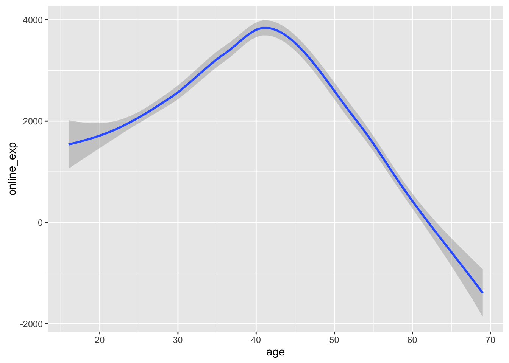
其中geom_smooth()默认设置是使用LOESS平滑，所以你不用进行额外的设置。其中蓝色的线代表LOESS平滑器拟合结果。
可以通过caret包中的函数filterVarImp对每个预测变量建立LOESS模型，并且定量分析其与结果变量之间的关系。这里我们将10个问卷调查变量当作自变量，将实体店消费量和在线消费之和当作应变量，重新得到一个数据框，然后用其进行展示：
TrainXtrans<-dat[,grep("Q",names(dat))]
TrainY<-dat$store_exp+dat$online_exp然后用filterVarImp()函数：
# 选项设置`nonpara = TRUE` (对于非参数回归)
loessResults <- filterVarImp(x = TrainXtrans, y = TrainY, nonpara = TRUE)
head(loessResults)## Overall
## Q1 0.43921457
## Q2 0.58319421
## Q3 0.57849504
## Q4 0.19425985
## Q5 0.22560965
## Q6 0.09568796该函数返回每个特征用LOESS方法得到的重要性度量。上面这些评估特征的方法只是单独考虑每一个特征，而没有考虑特征之间的关系。这里考虑的是特征和应变量都是数值型的情况。如果特征是分类变量时该怎么办呢（比如服装消费者数据中的性别（gender）变量）？这种情况很自然的会想到t检验，寻找p<0.05的变量：
t.test(online_exp~gender,data=dat)##
## Welch Two Sample t-test
##
## data: online_exp by gender
## t = -3.1471, df = 784.02, p-value = 0.001711
## alternative hypothesis: true difference in means is not equal to 0
## 95 percent confidence interval:
## -579.1784 -134.2047
## sample estimates:
## mean in group Female mean in group Male
## 1957.417 2314.109当预测变量大于2时，可以使用方差分析（ANOVA）。我们用客户分组变量为例展示代码：
anova(lm(online_exp~segment,data=dat))## Analysis of Variance Table
##
## Response: online_exp
## Df Sum Sq Mean Sq F value Pr(>F)
## segment 3 2457017793 819005931 1560.8 < 2.2e-16 ***
## Residuals 994 521588437 524737
## ---
## Signif. codes: 0 '***' 0.001 '**' 0.01 '*' 0.05 '.' 0.1 ' ' 1这里要注意，如之前所说，p值并不是一个很好的筛选变量的标准。但是有时我们需要对大量的变量进行筛选，找到需要进一步重点研究的候选变量，用p<0.05作为一个标准确实是一个快速的方法。这里个人不建议大家在需要高精确度的模型中使用这样的变量筛选方式，但是在市场调查问卷中，可以用p值来大致判断那些问题在不同受访者群体中有显著差别。另外需要注意的是，p值小于0.05这个阈值不是不可改变的，事实上，你很可能会遇到重复检验的问题，我们需要对p值进行调整来缓解该问题，比如Bonferroni校正(Bland J 1995)。如果要做k次统计检验，定义统计显著性p值的原始阈值为a，那么将该值调整为\(\frac{a}{k}\)能提高检验的可信度。但该校正方法可能过度保守。
对于特征是数值型，应变量是分类型的情况，我们可以使用ROC曲线下面积量化特征和应变量的相关性。之前在模型评估的部分中我们已经讲过ROC曲线下面积。这里我们将服装消费者数据中的是否有房的指示变量当作应变量，其它一些数值特征当作自变量展示如何使用filterVarImp()函数实现重要性分值的计算：
vars<-c("age","income","store_exp","online_exp")
x<-subset(dat,select=vars)
y<-dat$house
rocValues <- filterVarImp(x = x, y = y)
rocValues## No Yes
## age 0.7968303 0.7968303
## income 0.7590159 0.7590159
## store_exp 0.7985940 0.7985940
## online_exp 0.4339279 0.4339279如果某特征能够完美的将两类样本分离，那么存在一个阈值能够给出100%的敏感度和特异度，这时曲线下面积是1。如前所述，一个和结果变量全不相关的预测变量对应的曲线下面积大概是0.5。上面结果显示在线消费量（online_exp）对区分有房和无房的人没有帮助。
当有三个或三个以上类别的时候，我们可以使用ROC曲线的推广(H. J and B 1982; E.R. DeLong 1988; E 2000)。或则我们可以将除某一类外的其它类合并在一起,这样对每一类我们都会得到相应的AUC（曲线下面积）值。总体区分度可以量化为这些类AUC的平均。filterVarImp()函数能够分别计算其中任何两类之间的ROC曲线然后给出最大的线下面积:
y<-dat$segment
rocValues <- filterVarImp(x = x, y = y)
rocValues## Conspicuous Price Quality Style
## age 0.999457286 0.99945729 0.2787940 0.05644699
## income 0.079660533 0.07966053 0.9637399 0.96373994
## store_exp 0.005701862 0.05052000 0.0505200 0.03369628
## online_exp 0.028566903 1.00000000 1.0000000 1.00000000一个更简单的方法是检测不同类样本对应某预测变量的观测平均值是否有差别。这和前一小节提到的方法类似，不同的是在这里预测变量的观测被当作“结果”。
如果特征和应变量都是分类型，有几种用于测量变量重要性的方法。对于二分类预测变量，一个 有效的方式是是使用让步比。 一个概率为p的事件的发生比是\(\pi=\frac{p}{1-p}\) （是该事件发生和不发生的比率）。预测变量每个类对应一个概率，如果将其记为\(p_{1}\)和\(p{2}\)，对应的发生比为\(\pi_{1}\)和\(\pi_{2}\)，那么让步比(B. J and D 2000; A 2002)：
\[让步比＝\frac{\pi_{1}}{\pi_{2}}\]
让步比表明从预测变量的第一类到预测变量第二类，对应事件发生比的变化。 当类的个数超过2或者预测变量有2个以上层级时，可以使用其它方法。在这种情况下依旧可以使用Fisher确切检验来测量预测变量和相应结果类别的联系。
9.3.1.2 Relief 算法
Relief为一系列算法，最早由Kira和Rendell(K and L 1992)提出。和其它重要性衡量的方法类似，算法给出的是一个重要性分值，将分值低于某个阈值的特征移除。这里可以将阈值当作调优参数通过划分测试集和训练集，基于一个模型表现的度量进行选择。该算法最初用于二分类判别分析，适用于连续预测变量和虚拟变量，能够识别预测变量和结果变量之间的非线性关系。之后被扩展到应变量为连续值的情况。
原始的Relief算法的基本原理是通过特征对近距离样本的区分能力来估计重要性。沿用之前高维标度化中的公式表达，假设有n个样本观测和p个变量，对应应变量为\(\mathbf{y}\)（或者目标变量），观测矩阵为\(\mathbf{X}_{n\times p}\)。特征向量为：
\[\mathbf{x_{.1}}, \mathbf{x_{.2}},...,\mathbf{x_{.p}}\]
算法从训练集中随机选择一个样本R，然后从和R同类的样本中寻找最近的同类（称为“hit”，之后用H表示）和不同类的样本（称为“miss”，之后用M表示），然后根据以下规则更新每个特征的权重：如果R和H在某个特征上的距离小于R和M的距离，则说明该特征对区分R附近同类和不同类样本是有益的，因此增加该特征的权重；反之，如果R和H在某个特征的距离大于R和M的距离，说明该特征对区分附近同类和不同类样本起负面作用，随即降低该特征的权重。将上面过程重复m次，最后得到各特征的平均权重。特征的权重越大，表示该特征的分类能力越强，反之，表示该特征分类能力越弱。对连续型特征的距离，Kira和Rendell建议用两点之间的距离除以该特征的观测极差:
\[diff(x_{ij}, x{kj}) = \frac{x_{ij} − x_{kj}}{C}\]
这里常数\(C=max(\mathbf{x_{.j}})-min(\mathbf{x_{.j}})\)将差别标准化到\([0,1]\) 区间。对于二项数据 (即, 0/1)， 可以简单使用绝对值： \[diff(x_{ij}, x_{kj}) = |x_{ij} − x_{kj}|\]
这样值域即为[0,1]。对于二分类问题具体算法如下所示：
- 将预测变量分值\(S_{j}\)初始值设为0 （j=1,…,p）
- 对 i=1…m随机抽取训练集样本\(R_{i}\)执行
- 找到最近的同类（H）和不同类（M）样本
- 对 预测变量 j=1…p 执行 1. 基于\(R_{i}\)与最近的同类和不同类样本的距离，按如下方式调整分值： 1. \(S_{j}=S_{j}-diff_{j}(R_{j},H)^{2}/m + diff_{j}(R_{j},M)^{2}/m\) 1. - 结束
- 结束
Relief算法的运行时间随着样本的抽样次数m和原始特征个数p的增加线性增加，因而运行效率非常高。之后Kononenko改进了该算法，改进后的算法称为ReliefF(I 1994)，其使用多个邻近点和不同的差别计算方式，并且能用于类数目大于2和有观测缺失的情况。之后Robnik-Sikonja和Kononenko进一步改进该方法使之适于回归（即，数值型结果变量）(M and I 1997)。关于这几种Relief算法的一个比较完整的介绍可以参考Marko Robnik-Sˇikonja和Igor Kononenko的文章(Robnik-Sˇikonja and Kononenko 2003)。
Relief 统计量的计算可以使用CORElearn包。其中函数attrEval()能计算几个不同版本的Relief值(使用estimator选项)。回归模型对应的estimator的参数设置可以通过下面代码查看：
# 需要事先安装CORElearn包
library(CORElearn)
infoCore(what="attrEvalReg")## [1] "RReliefFequalK" "RReliefFexpRank" "RReliefFbestK"
## [4] "RReliefFwithMSE" "MSEofMean" "MSEofModel"
## [7] "MAEofModel" "RReliefFdistance" "RReliefFsqrDistance"类似的，分类模型对应的estimator的参数设置为：
infoCore(what="attrEval")## [1] "ReliefFequalK" "ReliefFexpRank" "ReliefFbestK"
## [4] "Relief" "InfGain" "GainRatio"
## [7] "MDL" "Gini" "MyopicReliefF"
## [10] "Accuracy" "ReliefFmerit" "ReliefFdistance"
## [13] "ReliefFsqrDistance" "DKM" "ReliefFexpC"
## [16] "ReliefFavgC" "ReliefFpe" "ReliefFpa"
## [19] "ReliefFsmp" "GainRatioCost" "DKMcost"
## [22] "ReliefKukar" "MDLsmp" "ImpurityEuclid"
## [25] "ImpurityHellinger" "UniformDKM" "UniformGini"
## [28] "UniformInf" "UniformAccuracy" "EqualDKM"
## [31] "EqualGini" "EqualInf" "EqualHellinger"
## [34] "DistHellinger" "DistAUC" "DistAngle"
## [37] "DistEuclid"我们用服装消费者数据为例，假设感兴趣的是收入，特征是所有问卷的问题。
dat<-read.csv("/Users/happyrabbit/Documents/GitHub/DataScientistR/Data/SegData.csv")
# 删除应变量缺失的行
dat=filter(dat,!is.na(income))
# 选取需要的变量
# 特征矩阵
xtrain=dat%>%
dplyr::select(num_range("Q", 1:10))
# 应变量
ytrain=dat$income
# 实践Relief算法
reliefValues = attrEval(ytrain ~ ., data = xtrain,
## 有许多计算Relief的方法，这里将k个邻近样本设置为等权重
## 更多信息键入?attrEval
estimator = "RReliefFequalK",
## 测试的数目：
ReliefIterations = 50)得到的分值如下：
head(reliefValues)## Q1 Q2 Q3 Q4 Q5
## -0.009624742 -0.031902397 0.005705953 -0.016508364 0.034252308
## Q6
## -0.007082354该函数也能用来计算其它分值，如增益比，基尼系数等。要用置换检验观测到的Relief分值可以使用AppliedPredictiveModeling包中的permuteRelief()函数：
library(AppliedPredictiveModeling)
perm = permuteRelief(x = xtrain, y = ytrain,
nperm = 500,
estimator = "RReliefFequalK",
ReliefIterations = 50)置换得到的Relief分值存在叫做permutations的子对象里：
head(perm$permutations)## Var1 Predictor value
## 1 1 Q1 0.005194469
## 2 2 Q1 -0.035755040
## 3 3 Q1 -0.006193998
## 4 4 Q1 -0.004264219
## 5 5 Q1 0.004122471
## 6 6 Q1 -0.009931796重要性分值的置换分布非常有帮助，能够让我们直观的了解分值的随机性，我们可以用下面方式对置换分值分布进行可视化：
lattice::histogram(~ value|Predictor,data = perm$permutations)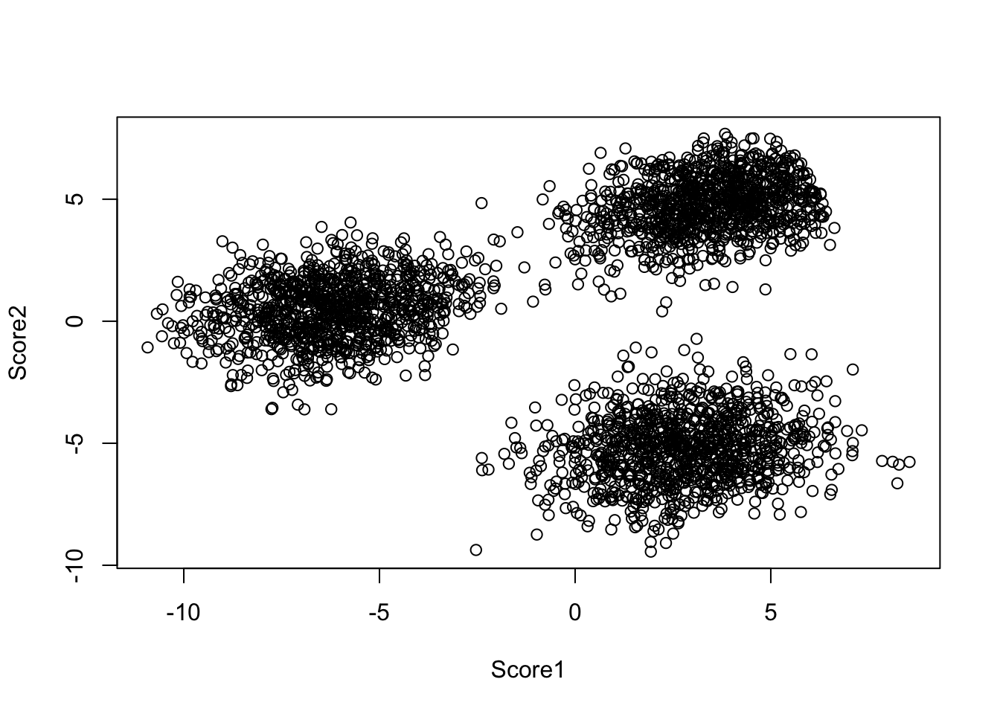
标准化后的分值存在叫做standardized的子对象里，其代表了观测到的Relief分值（无置换）离置换分布中心的距离与标准差的比值：
head(perm$standardized)## Q1 Q2 Q3 Q4 Q5 Q6
## -1.25769126 -1.27600996 1.97581995 -2.13350438 -0.62782489 -0.04602102上面讲到的各种通过对每个特征计算重要性分值，然后在建模时只包括满足一定条件的特征。该方法是在建模过程之前先对特征进行选择，选择标准和模型效果没有直接关系，计算更快，但比较粗糙，选出来的变量不一定能很好的优化模型效能。下面我们介绍另外一类基于模型效果的特征选择方法。
9.3.2 绕封法
绕封法按照一定规律不断增加或者删除变量，通过评估不同特征组合得到的模型拟合结果寻找能够最优化模型拟合的特征组合。其本质是搜索算法，将不同的特征子集当作输入，然后将模型评估结果作为需要优化的输出。
9.3.2.1 穷举法
最简单直接的是通过穷举得到所有可能的特征子集，然后找到优化模型拟合的组合。比如对于一个含有p个特征的最小二乘回归，我们可以先拟合p个只有一个特征的模型，然后拟合所有可能的\(\left(_{2}^{p}\right)=\frac{p(p-1)}{2}\)个含有两个特征的模型，依次类推搜索所有的模型。算法如下：
- 用\(M_{0}\)代表没有特征的模型，该模型用样本均值预测每个观测
- 对\(k=1,2,...,p\):
- 拟合所有\(\left(_{k}^{p}\right)\)个含有k个特征的模型
- 选择其中最优的模型，记为\(M_{k}\)。这里，最优指\(MSE\)最小或者\(R^{2}\)最大
- 选择\(M_{0},M_{1},...,M_{p}\)中最优的模型，选择标准可以是交互校验预测误差，\(C_{p}\)，AIC，BIC或者调整后的\(R^{2}\)
我们下面对服装消费者数据中的收入（income）建立一般线性模型，将消费记录变量和问卷调查回复变量作为因变量。通过leap包中的regsubsets()函数进行穷举变量选择。该函数可以给出对不同变量个数对应的最优模型，这里默认最优的标准是误差平方和。函数的语法和lm()函数相同。
# 需要先安装包
library(leaps)
# 载入服装消费者数据
sim.dat<-read.csv("/Users/happyrabbit/Documents/GitHub/DataScientistR/Data/SegData.csv")
ytrain<-sim.dat$income
xtrain<-dplyr::select(sim.dat,store_exp,online_exp,store_trans,online_trans,
Q1,Q2,Q3,Q4,Q5,Q6,Q7,Q8,Q9,Q10)
# 先用所有变量拟合全模型
regfit.full=regsubsets(ytrain~.,xtrain)用summary()函数可以得到不同变量个数对应的模型选择结果：
summary(regfit.full)## Subset selection object
## Call: regsubsets.formula(ytrain ~ ., xtrain)
## 14 Variables (and intercept)
## Forced in Forced out
## store_exp FALSE FALSE
## online_exp FALSE FALSE
## store_trans FALSE FALSE
## online_trans FALSE FALSE
## Q1 FALSE FALSE
## Q2 FALSE FALSE
## Q3 FALSE FALSE
## Q4 FALSE FALSE
## Q5 FALSE FALSE
## Q6 FALSE FALSE
## Q7 FALSE FALSE
## Q8 FALSE FALSE
## Q9 FALSE FALSE
## Q10 FALSE FALSE
## 1 subsets of each size up to 8
## Selection Algorithm: exhaustive
## store_exp online_exp store_trans online_trans Q1 Q2 Q3 Q4 Q5
## 1 ( 1 ) " " " " " " " " " " "*" " " " " " "
## 2 ( 1 ) " " " " " " " " " " " " " " " " "*"
## 3 ( 1 ) " " " " " " " " "*" "*" " " " " " "
## 4 ( 1 ) " " " " " " " " "*" "*" " " " " " "
## 5 ( 1 ) "*" " " " " " " "*" "*" " " " " " "
## 6 ( 1 ) "*" " " " " " " "*" "*" " " "*" " "
## 7 ( 1 ) "*" " " " " " " "*" "*" " " "*" "*"
## 8 ( 1 ) "*" " " "*" " " "*" "*" " " "*" "*"
## Q6 Q7 Q8 Q9 Q10
## 1 ( 1 ) " " " " " " " " " "
## 2 ( 1 ) "*" " " " " " " " "
## 3 ( 1 ) "*" " " " " " " " "
## 4 ( 1 ) "*" " " " " "*" " "
## 5 ( 1 ) "*" " " " " "*" " "
## 6 ( 1 ) "*" " " " " "*" " "
## 7 ( 1 ) "*" " " " " "*" " "
## 8 ( 1 ) "*" " " " " "*" " "结果中星号表示对应特征被选中。例如，第3行对应有3个“*”号，代表相应被选中的3个特征，该特征组合在所有可能的3特征模型中表现最好。默认设置下，函数只会返回1到8个特征对应的最优模型。但你可以通过设置nvmax选项来改变特征个数。下面我们将特征个数改成10：
regfit.full=regsubsets(ytrain~.,xtrain,nvmax=10)
reg.summary=summary(regfit.full)summary()函数也会返回\(R^{2}\)、RSS、调整\(R^{2}\)、\(C_{p}\)以及BIC这些模型评估统计量。同门可以通过这些统计量来得到最好的模型。
names(reg.summary)## [1] "which" "rsq" "rss" "adjr2" "cp" "bic" "outmat" "obj"例如，我们可以看到当模型从1个特征到2个特征，\(R^{2}\)统计量从60%上升到73%，之后增加特征变化不是太大。
reg.summary$adjr2## [1] 0.5992310 0.7313060 0.7417694 0.7486184 0.7505515 0.7515352 0.7518327
## [8] 0.7519945 0.7521044 0.7522297对所有模型绘制RSS、调整\(R^{2}\)、\(C_{p}\)以及BIC统计量图能够帮助选择最优模型。
par(mfrow=c(2,2))
plot(reg.summary$adjr2,xlab="变量个数",family ="Songti SC",ylab="调整R2",type="l")
# 用which.max()函数找到调整R2最大的点
idx<-which.max(reg.summary$adjr2)
# 用points()函数将调整R2最大的点在图上标出
points(idx,reg.summary$adjr2[idx],col="red",cex=2,pch=20)
plot(reg.summary$cp,xlab="变量个数",family ="Songti SC",ylab="Cp",type="l")
# 类似的找到Cp最小的点
idx<-which.min(reg.summary$cp)
# 将Cp最小的点在图上标出
points(idx,reg.summary$cp[idx],col="red",cex=2,pch=20)
plot(reg.summary$bic,xlab="变量个数",family ="Songti SC",ylab="BIC",type="l")
# 找到BIC最小的点
idx<-which.min(reg.summary$bic)
# 将Cp最小的点在图上标出
points(idx,reg.summary$bic[idx],col="red",cex=2,pch=20)
plot(reg.summary$rss,xlab="变量个数",family ="Songti SC",ylab="RSS",type="l")
# 找到RSS最小的点
idx<-which.min(reg.summary$rss)
# 将Cp最小的点在图上标出
points(idx,reg.summary$rss[idx],col="red",cex=2,pch=20)Figure 9.1: 穷尽法选择结果。
该方法的问题在与要拟合和评估所有可能的特征子集，这想起来容易，但对于稍微大一点的p来说计算量大的难以实施。这种穷尽的方法也会导致统计问题，比如过度拟合和参数估计的高方差。考虑到这点，逐步回归是比穷尽所有特征子集更好的方法，此类方法的搜索领域小的多。逐步回归有向前选择，向后选择和双向选择。
9.3.2.2 向前选择
向前选择考虑的特征子集数目小多了。其从没有特征的模型开始逐一加入特征，直到所有的特征都在模型当中。当加入一个变量对模型提升有很大帮助时，就将该变量保留在模型中。具体算法如下：
- 用\(M_{0}\)代表没有特征的模型，该模型用样本均值预测每个观测
- 对\(k=0,2,...,p-1\):
- 依次在\(M_{k}\)中加入剩下的\(p-k\)个特征，每次加入1个特征，然后放回加入另外一个，逐一衡量每个特征对模型表现的提升
- 选择\(p-k\)个模型中最优的模型，记为\(M_{k+1}\)。这里，最优指\(MSE\)最小或者\(R^{2}\)最大
- 选择\(M_{0},M_{1},...,M_{p}\)中最优的模型，选择标准可以是交互校验预测误差，\(C_{p}\)，AIC，BIC或者调整后的\(R^{2}\)
和穷举法不同，向前选择先拟合一个初始模型\(M_{0}\)，然后对第\(k\)次迭代，拟合\(p-k\)个模型，这里\(k=0,1,...,p-1\)，这样一共拟合的模型数目是：\(1+\Sigma_{k=0}^{p-1}(p-k)=1+\frac{p(p-1)}{2}\)个。和穷举法的\(2^{p}\)个模型相比，差太多的。当\(p=20\)时，穷举法要拟合1048576个模型，而向前选择只需要拟合211个模型。上面算法的第2步得到了不同大小的特征集合对应的最优模型，然后在第3步中从\(p+1\)个特征个数不同的模型中选出最优的模型。这里要注意一点，就是RSS随着特征个数的增加而增加，\(R^{2}\)随着特征个数的增加而单调下降。因此在第2步中，我们在特征数目相同的模型中进行选择时可以直接使用训练集的拟合优度统计量。但在第3步中，我们要在特征个数不同的模型中选择，这时就需要使用交互校验。关于交互校验，大家可以参考之前的基础建模技术那一章。
我们可以继续使用regsubsets()这个函数进行向前选择，只需要设置method="forward"。沿用之前小节的例子：
# 需要先安装包
library(leaps)
# 载入服装消费者数据
sim.dat<-read.csv("/Users/happyrabbit/Documents/GitHub/DataScientistR/Data/SegData.csv")
ytrain<-sim.dat$income
xtrain<-dplyr::select(sim.dat,store_exp,online_exp,store_trans,online_trans,
Q1,Q2,Q3,Q4,Q5,Q6,Q7,Q8,Q9,Q10)
# 先用所有变量拟合全模型
regfit.fwd=regsubsets(ytrain~.,xtrain,nvmax=10,method="forward")
# 可以用summary()函数得到模型选择
reg.summary=summary(regfit.fwd)类似的，我们可以对向前选择结果进行可视化，得到最优的变量个数。这里的个数选择和穷尽法相同。从图中可以看出，当变量个数超过4时，模型表现的变化很小。
par(mfrow=c(2,2))
plot(reg.summary$adjr2,xlab="变量个数",family ="Songti SC",ylab="调整R2",type="l")
# 用which.max()函数找到调整R2最大的点
idx<-which.max(reg.summary$adjr2)
# 用points()函数将调整R2最大的点在图上标出
points(idx,reg.summary$adjr2[idx],col="red",cex=2,pch=20)
plot(reg.summary$cp,xlab="变量个数",family ="Songti SC",ylab="Cp",type="l")
# 类似的找到Cp最小的点
idx<-which.min(reg.summary$cp)
# 将Cp最小的点在图上标出
points(idx,reg.summary$cp[idx],col="red",cex=2,pch=20)
plot(reg.summary$bic,xlab="变量个数",family ="Songti SC",ylab="BIC",type="l")
# 找到BIC最小的点
idx<-which.min(reg.summary$bic)
# 将Cp最小的点在图上标出
points(idx,reg.summary$bic[idx],col="red",cex=2,pch=20)
plot(reg.summary$rss,xlab="变量个数",family ="Songti SC",ylab="RSS",type="l")
# 找到RSS最小的点
idx<-which.min(reg.summary$rss)
# 将Cp最小的点在图上标出
points(idx,reg.summary$rss[idx],col="red",cex=2,pch=20)
Figure 9.2: 向前选择结果。
9.3.2.3 向后选择
和向前选择类似，向后选择考虑的特征子集数目比穷尽法小多了。和向前选择不同的是，向后选择从含有所有p个特征的全模型开始，然后迭代逐一删除最无效的特征。具体算法如下：
- 用\(M_{p}\)代表含有所有\(p\)个特征的全模型
- 对\(k=p,p-1,...,1\):
- 依次在\(M_{k}\)中移除某个特征，评估得到的\(k\)个含有\(k-1\)个特征的模型
- 在\(k\)个模型中选择最优的模型，记为\(M_{k-1}\)。这里，最优指\(MSE\)最小或者\(R^{2}\)最大
- 选择\(M_{0},M_{1},...,M_{p}\)中最优的模型，选择标准可以是交互校验预测误差，\(C_{p}\)，AIC，BIC或者调整后的\(R^{2}\)
向后选择评估的模型个数和向前选择一样，也是\(1+\frac{p(p+1)}{2}\)个，但它也无法保证选出的模型是全局最优的。这些不同的选择算法本质上都是搜索算法，只是搜索的路径不同。由于向后选择从全模型开始，因此要求观测的个数大于变量的个数（即\(n>p\)），这点和向前选择不同。
我们可以regsubsets()这个函数进行向后选择，只需要设置method="backward"。也可以类似对其可视化。这里就不重复展示代码了。
regfit.bwd=regsubsets(ytrain~.,xtrain,nvmax=10,method="backward")
# 可以用summary()函数得到模型选择
reg.summary=summary(regfit.bwd)9.3.3 总结
有监督的变量筛选可以是数据驱动的。筛选结果加上相关学科专家的意见能使我们朝建立有效预测模型的目标前进一大步。我们会在下个章节中看到，很多变量筛选算法基于定量相关性得分。之前的章节曾提到过，很多预测模型本身就能够测量预测变量的重要性，如MARS以及许多基于树的模型会监测每加入一个预测变量时模型表现的提升。其它模型，如线性回归或者逻辑回归通过模型参数或则统计量（如t统计量）对量化模型结果。本章讨论的方法并不限定于一个具体的预测模型。如果已经建立了有效的模型，基于模型得出的评分比本章将要提到的通用方法或许更可靠，因为其直接针对该模型。
References
Spearman, C. 1904. “‘General Intelligence,’ Objectively Determined and Measured.” The American Journal of Psychology 15 (2): 201–92.
Gower, J. C. 1971. “A General Coefficient of Similarity and Some of Its Properties.” Biometrics 27 (857–874).
Oded Netzer, Jacob Goldenberg, Ronen Feldman. 2012. “Mine Your Own Business: Market-Structure Surveillance Through Text Mining.” Marketing Science 31 (3): 521–43.
Kaiser, Henry F. 1958. “The Varimax Criterion for Analytic Rotation in Factor Analysis.” Psychometrika 23 (3).
Jackson, Edward. 2003. A User’s Guide to Principal Components. John Wiley & Sons.
Mardia, K.V. 1978. “Some Properties of Classical Multidimensional Scaling.” Communications on Statistics – Theory and Methods A7 (1233–1241).
Borg, Groenen, I. 2012. Applied Multidimensional Scaling. Springer.
Borg, I., and P. J. Groenen. 2005. Modern Multidimensional Scaling: Theory and Applications. Springer.
Max Kuhn, Kjell Johnston. 2013. Applied Predictive Modeling. Springer.
Guyon I, Elisseeff A. 2003. “An Introduction to Variable and Feature Selec- Tion.” The Journal of Machine Learning Research 3: 1157–82.
Cleveland W, Devlin S. 1988. “Locally Weighted Regression: An Approach to Regression Analysis by Local Fitting.” Journal of the American Statistical Association, 596–610.
Bland J, Altman D. 1995. “Statistics Notes: Multiple Significance Tests: The Bonferroni Method.” British Medical Journal 310 (6973): 170–70.
J, Hanley, and McNeil B. 1982. “The Meaning and Use of the Area Under a Receiver Operating (ROC) Curvel Characteristic.” Radiology 143 (1).
E.R. DeLong, D.L. Clarke-Pearson, D.M. DeLong. 1988. “Comparing the Areas Under Two or More Correlated Receiver Operating Characteristics Curves: A Nonparametric Approach.” Biometrics 44: 837–45.
E, Venkatraman. 2000. “A Permutation Test to Compare Receiver Operating Characteristic Curves.” Biometrics 56 (4): 1134–8.
J, Bland, and Altman D. 2000. “The Odds Ratio.” British Medical Journal 320 (7247): 1468.
A, Agresti. 2002. Categorical Data Analysis. Wiley–Interscience. Wiley.
K, Kira, and Rendell L. 1992. “The Feature Selection Problem: Traditional Methods and a New Algorithm.” Proceedings of the National Conference on Artificial Intelligence, 129–29.
I, Kononenko. 1994. Estimating Attributes: Analysis and Extensions of Relief.” in F Bergadano, L de Raedt (Eds.), ``Machine Learning: ECML–94". Vol. 784. 171–182. Springer Berlin / Heidelberg.
M, Robnik-Sikonja, and Kononenko I. 1997. “An Adaptation of Relief for Attribute Estimation in Regression.” Proceedings of the Fourteenth International Conference on Machine Learning, 296–304.
Robnik-Sˇikonja, Marko, and Igor Kononenko. 2003. “Theoretical and Empirical Analysis of ReliefF and RReliefF.” Machine Learning Journal 53 (23-69).